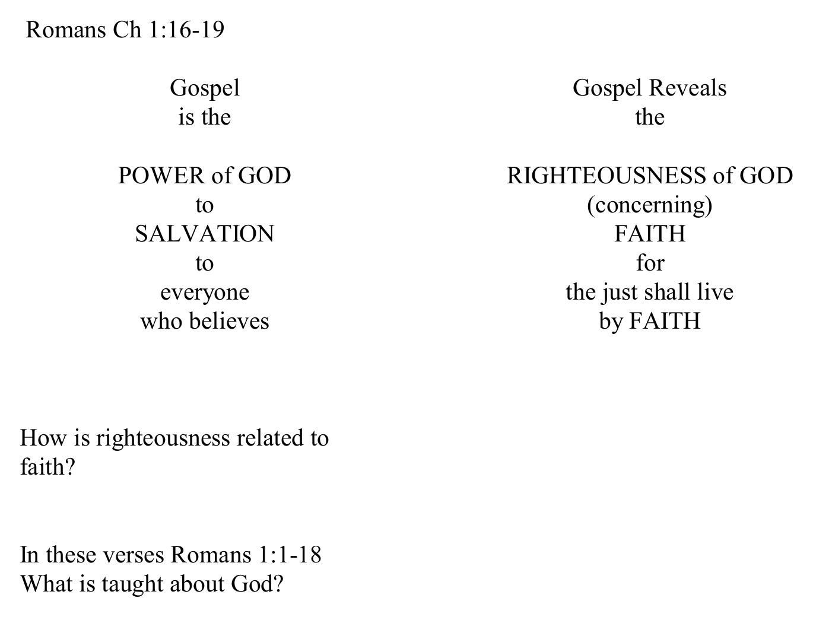

Romans
Read each chapter first, then work through Jim’s questions for that chapter. His wording is unchanged, including punctuation and typographical quirks.
Charts, maps, and diagrams
These are Jim’s study visuals. Hole-punch marks, phantom scan lines, and page-edge artifacts have been cleaned; the drawings themselves are unchanged.

Chapter 1
Romans 1 (King James Version)
1Paul, a servant of Jesus Christ, called to be an apostle, separated unto the gospel of God, 2(Which he had promised afore by his prophets in the holy scriptures,) 3Concerning his Son Jesus Christ our Lord, which was made of the seed of David according to the flesh; 4And declared to be the Son of God with power, according to the spirit of holiness, by the resurrection from the dead: 5By whom we have received grace and apostleship, for obedience to the faith among all nations, for his name: 6Among whom are ye also the called of Jesus Christ: 7To all that be in Rome, beloved of God, called to be saints: Grace to you and peace from God our Father, and the Lord Jesus Christ. 8First, I thank my God through Jesus Christ for you all, that your faith is spoken of throughout the whole world. 9For God is my witness, whom I serve with my spirit in the gospel of his Son, that without ceasing I make mention of you always in my prayers; 10Making request, if by any means now at length I might have a prosperous journey by the will of God to come unto you. 11For I long to see you, that I may impart unto you some spiritual gift, to the end ye may be established; 12That is, that I may be comforted together with you by the mutual faith both of you and me. 13Now I would not have you ignorant, brethren, that oftentimes I purposed to come unto you, (but was let hitherto,) that I might have some fruit among you also, even as among other Gentiles. 14I am debtor both to the Greeks, and to the Barbarians; both to the wise, and to the unwise. 15So, as much as in me is, I am ready to preach the gospel to you that are at Rome also. 16For I am not ashamed of the gospel of Christ: for it is the power of God unto salvation to every one that believeth; to the Jew first, and also to the Greek. 17For therein is the righteousness of God revealed from faith to faith: as it is written, The just shall live by faith. 18For the wrath of God is revealed from heaven against all ungodliness and unrighteousness of men, who hold the truth in unrighteousness; 19Because that which may be known of God is manifest in them; for God hath shewed it unto them. 20For the invisible things of him from the creation of the world are clearly seen, being understood by the things that are made, even his eternal power and Godhead; so that they are without excuse: 21Because that, when they knew God, they glorified him not as God, neither were thankful; but became vain in their imaginations, and their foolish heart was darkened. 22Professing themselves to be wise, they became fools, 23And changed the glory of the uncorruptible God into an image made like to corruptible man, and to birds, and fourfooted beasts, and creeping things. 24Wherefore God also gave them up to uncleanness through the lusts of their own hearts, to dishonour their own bodies between themselves: 25Who changed the truth of God into a lie, and worshipped and served the creature more than the Creator, who is blessed for ever. Amen. 26For this cause God gave them up unto vile affections: for even their women did change the natural use into that which is against nature: 27And likewise also the men, leaving the natural use of the woman, burned in their lust one toward another; men with men working that which is unseemly, and receiving in themselves that recompence of their error which was meet. 28And even as they did not like to retain God in their knowledge, God gave them over to a reprobate mind, to do those things which are not convenient; 29Being filled with all unrighteousness, fornication, wickedness, covetousness, maliciousness; full of envy, murder, debate, deceit, malignity; whisperers, 30Backbiters, haters of God, despiteful, proud, boasters, inventors of evil things, disobedient to parents, 31Without understanding, covenantbreakers, without natural affection, implacable, unmerciful: 32Who knowing the judgment of God, that they which commit such things are worthy of death, not only do the same, but have pleasure in them that do them.Chapter 2
Romans - Packet1 - 2
Romans 2 (King James Version)
1Therefore thou art inexcusable, O man, whosoever thou art that judgest: for wherein thou judgest another, thou condemnest thyself; for thou that judgest doest the same things. 2But we are sure that the judgment of God is according to truth against them which commit such things. 3And thinkest thou this, O man, that judgest them which do such things, and doest the same, that thou shalt escape the judgment of God? 4Or despisest thou the riches of his goodness and forbearance and longsuffering; not knowing that the goodness of God leadeth thee to repentance? 5But after thy hardness and impenitent heart treasurest up unto thyself wrath against the day of wrath and revelation of the righteous judgment of God; 6Who will render to every man according to his deeds: 7To them who by patient continuance in well doing seek for glory and honour and immortality, eternal life: 8But unto them that are contentious, and do not obey the truth, but obey unrighteousness, indignation and wrath, 9Tribulation and anguish, upon every soul of man that doeth evil, of the Jew first, and also of the Gentile; 10But glory, honour, and peace, to every man that worketh good, to the Jew first, and also to the Gentile: 11For there is no respect of persons with God. 12For as many as have sinned without law shall also perish without law: and as many as have sinned in the law shall be judged by the law; 13(For not the hearers of the law are just before God, but the doers of the law shall be justified. 14For when the Gentiles, which have not the law, do by nature the things contained in the law, these, having not the law, are a law unto themselves: 15Which shew the work of the law written in their hearts, their conscience also bearing witness, and their thoughts the mean while accusing or else excusing one another;) 16In the day when God shall judge the secrets of men by Jesus Christ according to my gospel. 17Behold, thou art called a Jew, and restest in the law, and makest thy boast of God, 18And knowest his will, and approvest the things that are more excellent, being instructed out of the law; 19And art confident that thou thyself art a guide of the blind, a light of them which are in darkness, 20An instructor of the foolish, a teacher of babes, which hast the form of knowledge and of the truth in the law. 21Thou therefore which teachest another, teachest thou not thyself? thou that preachest a man should not steal, dost thou steal? 22Thou that sayest a man should not commit adultery, dost thou commit adultery? thou that abhorrest idols, dost thou commit sacrilege? 23Thou that makest thy boast of the law, through breaking the law dishonourest thou God? 24For the name of God is blasphemed among the Gentiles through you, as it is written. 25For circumcision verily profiteth, if thou keep the law: but if thou be a breaker of the law, thy circumcision is made uncircumcision. 26Therefore if the uncircumcision keep the righteousness of the law, shall not his uncircumcision be counted for circumcision? 27And shall not uncircumcision which is by nature, if it fulfil the law, judge thee, who by the letter and circumcision dost transgress the law? 28For he is not a Jew, which is one outwardly; neither is that circumcision, which is outward in the flesh: 29But he is a Jew, which is one inwardly; and circumcision is that of the heart, in the spirit, and not in the letter; whose praise is not of men, but of God.Jim’s questions
-
1)What happens when you judge another? V 1
Romans 2:1 (KJV) 1 Therefore thou art inexcusable, O man, whosoever thou art that judgest: for wherein thou judgest another, thou condemnest thyself; for thou that judgest doest the same things.Answer:
-
2)According to what is the judgment of God? V 2
Romans 2:2 (KJV) 2 But we are sure that the judgment of God is according to truth against them which commit such things.Answer:
-
3)Do you think you will escape the judgment of God? V 3
Romans 2:3 (KJV) 3 And thinkest thou this, O man, that judgest them which do such things, and doest the same, that thou shalt escape the judgment of God?Answer:
-
4)What does man despise? V 4
Romans 2:4 (KJV) 4 Or despisest thou the riches of his goodness and forbearance and longsuffering; not knowing that the goodness of God leadeth thee to repentance?Answer:
-
5)Describe the heart of man? V 5
Romans 2:5 (KJV) 5 But after thy hardness and impenitent heart treasurest up unto thyself wrath against the day of wrath and revelation of the righteous judgment of God;Answer:
-
Thought question – Define the word impenitent –
Romans 2:5 (KJV) 5 But after thy hardness and impenitent heart treasurest up unto thyself wrath against the day of wrath and revelation of the righteous judgment of God;Answer:
-
7)To whom will God render ? V 6
Romans 2:6 (KJV) 6 Who will render to every man according to his deeds:Answer:
-
8)Who gets eternal life? V 7
Romans 2:7 (KJV) 7 To them who by patient continuance in well doing seek for glory and honour and immortality, eternal life:Answer:
-
9)What do the contentious get? V 8 - 9
Romans 2:8-9 (KJV) 8 But unto them that are contentious, and do not obey the truth, but obey unrighteousness, indignation and wrath, 9 Tribulation and anguish, upon every soul of man that doeth evil, of the Jew first, and also of the Gentile;Answer:
-
10)Who gets glory? V 10
Romans 2:10 (KJV) 10 But glory, honour, and peace, to every man that worketh good, to the Jew first, and also to the Gentile:Answer:
-
11)Why is this? V 11
Romans 2:11 (KJV) 11 For there is no respect of persons with God.Answer:
-
12)Will those who have sinned without law perish? V 12
Romans 2:12 (KJV) 12 For as many as have sinned without law shall also perish without law: and as many as have sinned in the law shall be judged by the law;Answer:
-
13)Are hearers of the law justified before God? V 13
Romans 2:13 (KJV) 13 (For not the hearers of the law are just before God, but the doers of the law shall be justified.Answer:
-
14)What law do the Gentiles have? V 14
Romans 2:14 (KJV) 14 For when the Gentiles, which have not the law, do by nature the things contained in the law, these, having not the law, are a law unto themselves:Answer:
-
15)Where is the work of the law written in the Gentiles? V 15
Romans 2:15 (KJV) 15 Which shew the work of the law written in their hearts, their conscience also bearing witness, and their thoughts the mean while accusing or else excusing one another;)Answer:
-
16)By whose Gospel will God judge men? V 16
Romans 2:16 (KJV) 16 In the day when God shall judge the secrets of men by Jesus Christ according to my gospel.Answer:
-
17)Who restest in the Law? V 17
Romans 2:17 (KJV) 17 Behold, thou art called a Jew, and restest in the law, and makest thy boast of God,Answer:
-
18)What does the Jew know? V 18
Romans 2:18 (KJV) 18 And knowest his will, and approvest the things that are more excellent, being instructed out of the law;Answer:
-
19)Of what is the Jew confident? 19 - 20
Romans 2:19-20 (KJV) 19 And art confident that thou thyself art a guide of the blind, a light of them which are in darkness, 20 An instructor of the foolish, a teacher of babes, which hast the form of knowledge and of the truth in the law.Answer:
-
Thought question – What is the sense of the next verses? V 21 - 23
Romans 2:21-23 (KJV) 21 Thou therefore which teachest another, teachest thou not thyself? thou that preachest a man should not steal, dost thou steal? 22 Thou that sayest a man should not commit adultery, dost thou commit adultery? thou that abhorrest idols, dost thou commit sacrilege? 23 Thou that makest thy boast of the law, through breaking the law dishonourest thou God?Answer:
-
21)Whose name is blasphemed among the Gentiles? V 24 1
Romans 2:24 (KJV) 24 For the name of God is blasphemed among the Gentiles through you, as it is written.Answer:
-
22)When does being a Jew profit? V 25
Romans 2:25 (KJV) 25 For circumcision verily profiteth, if thou keep the law: but if thou be a breaker of the law, thy circumcision is made uncircumcision.Answer:
-
23)If a Gentile keeps the law will that not count toward Jewishness? V 26
Romans 2:26 (KJV) 26 Therefore if the uncircumcision keep the righteousness of the law, shall not his uncircumcision be counted for circumcision?Answer:
-
24)Will Gentiles, who keep the law, not judge Jews who transgress the law? V 27
Romans 2:27 (KJV) 27 And shall not uncircumcision which is by nature, if it fulfil the law, judge thee, who by the letter and circumcision dost transgress the law?Answer:
-
25)Is Jewishness outward or inward? V 28 - 29
Romans 2:28-29 (KJV) 28 For he is not a Jew, which is one outwardly; neither is that circumcision, which is outward in the flesh: 29 But he is a Jew, which is one inwardly; and circumcision is that of the heart, in the spirit, and not in the letter; whose praise is not of men, but of God.Answer:
Chapter 3
Romans - Packet1 - 3
Romans 3 (King James Version)
1What advantage then hath the Jew? or what profit is there of circumcision? 2Much every way: chiefly, because that unto them were committed the oracles of God. 3For what if some did not believe? shall their unbelief make the faith of God without effect? 4God forbid: yea, let God be true, but every man a liar; as it is written, That thou mightest be justified in thy sayings, and mightest overcome when thou art judged. 5But if our unrighteousness commend the righteousness of God, what shall we say? Is God unrighteous who taketh vengeance? (I speak as a man) 6God forbid: for then how shall God judge the world? 7For if the truth of God hath more abounded through my lie unto his glory; why yet am I also judged as a sinner? 8And not rather, (as we be slanderously reported, and as some affirm that we say,) Let us do evil, that good may come? whose damnation is just. 9What then? are we better than they? No, in no wise: for we have before proved both Jews and Gentiles, that they are all under sin; 10As it is written, There is none righteous, no, not one: 11There is none that understandeth, there is none that seeketh after God. 12They are all gone out of the way, they are together become unprofitable; there is none that doeth good, no, not one. 13Their throat is an open sepulchre; with their tongues they have used deceit; the poison of asps is under their lips: 14Whose mouth is full of cursing and bitterness: 15Their feet are swift to shed blood: 16Destruction and misery are in their ways: 17And the way of peace have they not known: 18There is no fear of God before their eyes. 19Now we know that what things soever the law saith, it saith to them who are under the law: that every mouth may be stopped, and all the world may become guilty before God. 20Therefore by the deeds of the law there shall no flesh be justified in his sight: for by the law is the knowledge of sin. 21But now the righteousness of God without the law is manifested, being witnessed by the law and the prophets; 22Even the righteousness of God which is by faith of Jesus Christ unto all and upon all them that believe: for there is no difference: 23For all have sinned, and come short of the glory of God; 24Being justified freely by his grace through the redemption that is in Christ Jesus: 25Whom God hath set forth to be a propitiation through faith in his blood, to declare his righteousness for the remission of sins that are past, through the forbearance of God; 26To declare, I say, at this time his righteousness: that he might be just, and the justifier of him which believeth in Jesus. 27Where is boasting then? It is excluded. By what law? of works? Nay: but by the law of faith. 28Therefore we conclude that a man is justified by faith without the deeds of the law. 29Is he the God of the Jews only? is he not also of the Gentiles? Yes, of the Gentiles also: 30Seeing it is one God, which shall justify the circumcision by faith, and uncircumcision through faith. 31Do we then make void the law through faith? God forbid: yea, we establish the law.Jim’s questions
-
1)What was the big advantage of Jew? 1 - 2
Romans 3:1-2 (KJV) 1 What advantage then hath the Jew? or what profit is there of circumcision? 2 Much every way: chiefly, because that unto them were committed the oracles of God.Answer:
-
2)Did their unbelief make the faith of God with out effect? V 3 - 4
Romans 3:3-4 (KJV) 3 For what if some did not believe? shall their unbelief make the faith of God without effect? 4 God forbid: yea, let God be true, but every man a liar; as it is written, That thou mightest be justified in thy sayings, and mightest overcome when thou art judged.Answer:
-
3)Since God is true what are men? V 4
Romans 3:4 (KJV) 4 God forbid: yea, let God be true, but every man a liar; as it is written, That thou mightest be justified in thy sayings, and mightest overcome when thou art judged.Answer:
-
4)Does our unrighteousness make God more righteous? V 5
Romans 3:5 (KJV) 5 But if our unrighteousness commend the righteousness of God, what shall we say? Is God unrighteous who taketh vengeance? (I speak as a man)Answer:
-
Thought question – How would you answer this accusation ‘if God gets glory from our sin why punish us’? V 5 - 6
Romans 3:5-6 (KJV) 5 But if our unrighteousness commend the righteousness of God, what shall we say? Is God unrighteous who taketh vengeance? (I speak as a man) 6 God forbid: for then how shall God judge the world?Answer:
-
6)Who says ‘why yet an I judged as a sinner’? V 7
Romans 3:7 (KJV) 7 For if the truth of God hath more abounded through my lie unto his glory; why yet am I also judged as a sinner?Answer:
-
7)For what is Paul slanderously reported as saying? V 8
Romans 3:8 (KJV) 8 And not rather, (as we be slanderously reported, and as some affirm that we say,) Let us do evil, that good may come? whose damnation is just.Answer:
-
8)Are Gentiles better than Jews? V 9
Romans 3:9 (KJV) 9 What then? are we better than they? No, in no wise: for we have before proved both Jews and Gentiles, that they are all under sin;Answer:
-
9)What has Paul proved about both Jews and Gentiles? V 9
Romans 3:9 (KJV) 9 What then? are we better than they? No, in no wise: for we have before proved both Jews and Gentiles, that they are all under sin;Answer:
-
10)Are there any humans righteous? V 10
Romans 3:10 (KJV) 10 As it is written, There is none righteous, no, not one:Answer:
-
11)Are there any that onderstandeth? V 11
Romans 3:11 (KJV) 11 There is none that understandeth, there is none that seeketh after God.Answer:
-
12)Are there any humans that seek after God? 11
Romans 3:11 (KJV) 11 There is none that understandeth, there is none that seeketh after God.Answer:
-
13)Where have they gone and what have they become? V 12
Romans 3:12 (KJV) 12 They are all gone out of the way, they are together become unprofitable; there is none that doeth good, no, not one.Answer:
-
14)Has anyone done good? V 12
Romans 3:12 (KJV) 12 They are all gone out of the way, they are together become unprofitable; there is none that doeth good, no, not one.Answer:
-
15)What has their throat become? V 13
Romans 3:13 (KJV) 13 Their throat is an open sepulchre; with their tongues they have used deceit; the poison of asps is under their lips:Answer:
-
Thought question – Define Sepulchre –
Romans 3:13 (KJV) 13 Their throat is an open sepulchre; with their tongues they have used deceit; the poison of asps is under their lips:Answer:
-
17)What do they use their tongues for? V 13
Romans 3:13 (KJV) 13 Their throat is an open sepulchre; with their tongues they have used deceit; the poison of asps is under their lips:Answer:
-
18)What is under their lips? V 13
Romans 3:13 (KJV) 13 Their throat is an open sepulchre; with their tongues they have used deceit; the poison of asps is under their lips:Answer:
-
Thought question – What is an asp? –
Romans 3:13 (KJV) 13 Their throat is an open sepulchre; with their tongues they have used deceit; the poison of asps is under their lips:Answer:
-
20)Of what is their mouth filled? V 14 1
Romans 3:14 (KJV) 14 Whose mouth is full of cursing and bitterness:Answer:
-
21)Are their feet swift to shed blood? V 15
Romans 3:15 (KJV) 15 Their feet are swift to shed blood:Answer:
-
22)What is in their ways? V 16
Romans 3:16 (KJV) 16 Destruction and misery are in their ways:Answer:
-
23)Have they known the way of peace? V 17
Romans 3:17 (KJV) 17 And the way of peace have they not known:Answer:
-
24)Do they fear God? V 18
Romans 3:18 (KJV) 18 There is no fear of God before their eyes.Answer:
-
25)What does the law do to the world? V 19
Romans 3:19 (KJV) 19 Now we know that what things soever the law saith, it saith to them who are under the law: that every mouth may be stopped, and all the world may become guilty before God.Answer:
-
26)Can the flesh be justified in God’s sight by the deeds of the law? V 20
Romans 3:20 (KJV) 20 Therefore by the deeds of the law there shall no flesh be justified in his sight: for by the law is the knowledge of sin.Answer:
-
27)To what do the law and the prophets witness? V 21
Romans 3:21 (KJV) 21 But now the righteousness of God without the law is manifested, being witnessed by the law and the prophets;Answer:
-
28)Fill in the blanks. Even the ___________________________ of God which is by ____________ of ________________________ unto all and upon all of them that believe. V 22
Romans 3:22 (KJV) 22 Even the righteousness of God which is by faith of Jesus Christ unto all and upon all them that believe: for there is no difference:Answer:
-
29)Have all sinned? V 23
Romans 3:23 (KJV) 23 For all have sinned, and come short of the glory of God;Answer:
-
30)How are all justified? V 24
Romans 3:24 (KJV) 24 Being justified freely by his grace through the redemption that is in Christ Jesus:Answer:
-
31)How is Christ Jesus a propitiation? V 25
Romans 3:25 (KJV) 25 Whom God hath set forth to be a propitiation through faith in his blood, to declare his righteousness for the remission of sins that are past, through the forbearance of God;Answer:
-
32)What will be declared? V 26
Romans 3:26 (KJV) 26 To declare, I say, at this time his righteousness: that he might be just, and the justifier of him which believeth in Jesus.Answer:
-
33)Where is boasting? V 27
Romans 3:27 (KJV) 27 Where is boasting then? It is excluded. By what law? of works? Nay: but by the law of faith.Answer:
-
34)What do we conclude? V 28
Romans 3:28 (KJV) 28 Therefore we conclude that a man is justified by faith without the deeds of the law.Answer:
-
35)Is He the God of the Jews only? V 29
Romans 3:29 (KJV) 29 Is he the God of the Jews only? is he not also of the Gentiles? Yes, of the Gentiles also:Answer:
-
36)How many Gods are there? V 30
Romans 3:30 (KJV) 30 Seeing it is one God, which shall justify the circumcision by faith, and uncircumcision through faith.Answer:
-
37)How do we establish the law? V 31
Romans 3:31 (KJV) 31 Do we then make void the law through faith? God forbid: yea, we establish the law.Answer:
Chapter 4
Romans - Packet1 - 4
Romans 4 (King James Version)
1What shall we say then that Abraham our father, as pertaining to the flesh, hath found? 2For if Abraham were justified by works, he hath whereof to glory; but not before God. 3For what saith the scripture? Abraham believed God, and it was counted unto him for righteousness. 4Now to him that worketh is the reward not reckoned of grace, but of debt. 5But to him that worketh not, but believeth on him that justifieth the ungodly, his faith is counted for righteousness. 6Even as David also describeth the blessedness of the man, unto whom God imputeth righteousness without works, 7Saying, Blessed are they whose iniquities are forgiven, and whose sins are covered. 8Blessed is the man to whom the Lord will not impute sin. 9Cometh this blessedness then upon the circumcision only, or upon the uncircumcision also? for we say that faith was reckoned to Abraham for righteousness. 10How was it then reckoned? when he was in circumcision, or in uncircumcision? Not in circumcision, but in uncircumcision. 11And he received the sign of circumcision, a seal of the righteousness of the faith which he had yet being uncircumcised: that he might be the father of all them that believe, though they be not circumcised; that righteousness might be imputed unto them also: 12And the father of circumcision to them who are not of the circumcision only, but who also walk in the steps of that faith of our father Abraham, which he had being yet uncircumcised. 13For the promise, that he should be the heir of the world, was not to Abraham, or to his seed, through the law, but through the righteousness of faith. 14For if they which are of the law be heirs, faith is made void, and the promise made of none effect: 15Because the law worketh wrath: for where no law is, there is no transgression. 16Therefore it is of faith, that it might be by grace; to the end the promise might be sure to all the seed; not to that only which is of the law, but to that also which is of the faith of Abraham; who is the father of us all, 17(As it is written, I have made thee a father of many nations,) before him whom he believed, even God, who quickeneth the dead, and calleth those things which be not as though they were. 18Who against hope believed in hope, that he might become the father of many nations, according to that which was spoken, So shall thy seed be. 19And being not weak in faith, he considered not his own body now dead, when he was about an hundred years old, neither yet the deadness of Sarah’s womb: 20He staggered not at the promise of God through unbelief; but was strong in faith, giving glory to God; 21And being fully persuaded that, what he had promised, he was able also to perform. 22And therefore it was imputed to him for righteousness. 23Now it was not written for his sake alone, that it was imputed to him; 24But for us also, to whom it shall be imputed, if we believe on him that raised up Jesus our Lord from the dead; 25Who was delivered for our offences, and was raised again for our justification.Jim’s questions
-
1)Who is ‘our father’? V 1
Romans 4:1 (KJV) 1 What shall we say then that Abraham our father, as pertaining to the flesh, hath found?Answer:
-
2)If Abraham were justified by works would that glorify God? V 2
Romans 4:2 (KJV) 2 For if Abraham were justified by works, he hath whereof to glory; but not before God.Answer:
-
3)How was Abraham’s faith counted to him? V 3
Romans 4:3 (KJV) 3 For what saith the scripture? Abraham believed God, and it was counted unto him for righteousness.Answer:
-
4)If we work for God’s glory how is it reckoned? V 4
Romans 4:4 (KJV) 4 Now to him that worketh is the reward not reckoned of grace, but of debt.Answer:
-
5)How is the belief of the one who worketh not reckoned? V 5
Romans 4:5 (KJV) 5 But to him that worketh not, but believeth on him that justifieth the ungodly, his faith is counted for righteousness.Answer:
-
6)How did David describe the imputed righteousness of the man with out works? V 6 - 8
Romans 4:6-8 (KJV) 6 Even as David also describeth the blessedness of the man, unto whom God imputeth righteousness without works, 7 Saying, Blessed are they whose iniquities are forgiven, and whose sins are covered. 8 Blessed is the man to whom the Lord will not impute sin.Answer:
-
7)Is this righteousness for the Jews only? V 9
Romans 4:9 (KJV) 9 Cometh this blessedness then upon the circumcision only, or upon the uncircumcision also? for we say that faith was reckoned to Abraham for righteousness.Answer:
-
8)Was Abraham a Gentile when this righteousness recckoned? V 10
Romans 4:10 (KJV) 10 How was it then reckoned? when he was in circumcision, or in uncircumcision? Not in circumcision, but in uncircumcision.Answer:
-
9)Is he the father of the Gentiles as well as the Jews? V 11
Romans 4:11 (KJV) 11 And he received the sign of circumcision, a seal of the righteousness of the faith which he had yet being uncircumcised: that he might be the father of all them that believe, though they be not circumcised; that righteousness might be imputed unto them also:Answer:
-
10)So then is righteousness available by faith to those walk in the steps of our father Abraham? V 11 - 12
Romans 4:11-12 (KJV) 11 And he received the sign of circumcision, a seal of the righteousness of the faith which he had yet being uncircumcised: that he might be the father of all them that believe, though they be not circumcised; that righteousness might be imputed unto them also: 12 And the father of circumcision to them who are not of the circumcision only, but who also walk in the steps of that faith of our father Abraham, which he had being yet uncircumcised.Answer:
-
11)Was promise, that he should be heir of the world, through the law? V 13
Romans 4:13 (KJV) 13 For the promise, that he should be the heir of the world, was not to Abraham, or to his seed, through the law, but through the righteousness of faith.Answer:
-
12)How do we get the promise? V 13
Romans 4:13 (KJV) 13 For the promise, that he should be the heir of the world, was not to Abraham, or to his seed, through the law, but through the righteousness of faith.Answer:
-
13)What happens to faith if heirs are from the law? V 14
Romans 4:14 (KJV) 14 For if they which are of the law be heirs, faith is made void, and the promise made of none effect:Answer:
-
14)Do we have transgression when there is no law? V 15
Romans 4:15 (KJV) 15 Because the law worketh wrath: for where no law is, there is no transgression.Answer:
-
15)What does faith bring? V 16
Romans 4:16 (KJV) 16 Therefore it is of faith, that it might be by grace; to the end the promise might be sure to all the seed; not to that only which is of the law, but to that also which is of the faith of Abraham; who is the father of us all,Answer:
-
16)What is sure to all the seed through faith and grace? V 16
Romans 4:16 (KJV) 16 Therefore it is of faith, that it might be by grace; to the end the promise might be sure to all the seed; not to that only which is of the law, but to that also which is of the faith of Abraham; who is the father of us all,Answer:
-
17)What is written? V 17
Romans 4:17 (KJV) 17 (As it is written, I have made thee a father of many nations,) before him whom he believed, even God, who quickeneth the dead, and calleth those things which be not as though they were.Answer:
-
18)What was spoken to Abraham? V 18
Romans 4:18 (KJV) 18 Who against hope believed in hope, that he might become the father of many nations; according to that which was spoken, So shall thy seed be.Answer:
-
19)Did he consider his own body now dead? V 19
Romans 4:19 (KJV) 19 And being not weak in faith, he considered not his own body now dead, when he was about an hundred years old, neither yet the deadness of Sara’s womb:Answer:
-
20)What was Abraham strong in? V 20 1
Romans 4:20 (KJV) 20 He staggered not at the promise of God through unbelief; but was strong in faith, giving glory to God;Answer:
-
21)What was Abraham persuaded of? V 21
Romans 4:21 (KJV) 21 And being fully persuaded that, what he had promised, he was able also to perform.Answer:
Chapter 5
Romans - Packet1 - 5
Romans 5 (King James Version)
1Therefore being justified by faith, we have peace with God through our Lord Jesus Christ: 2By whom also we have access by faith into this grace wherein we stand, and rejoice in hope of the glory of God. 3And not only so, but we glory in tribulations also: knowing that tribulation worketh patience; 4And patience, experience; and experience, hope: 5And hope maketh not ashamed; because the love of God is shed abroad in our hearts by the Holy Ghost which is given unto us. 6For when we were yet without strength, in due time Christ died for the ungodly. 7For scarcely for a righteous man will one die: yet peradventure for a good man some would even dare to die. 8But God commendeth his love toward us, in that, while we were yet sinners, Christ died for us. 9Much more then, being now justified by his blood, we shall be saved from wrath through him. 10For if, when we were enemies, we were reconciled to God by the death of his Son, much more, being reconciled, we shall be saved by his life. 11And not only so, but we also joy in God through our Lord Jesus Christ, by whom we have now received the atonement. 12Wherefore, as by one man sin entered into the world, and death by sin; and so death passed upon all men, for that all have sinned: 13(For until the law sin was in the world: but sin is not imputed when there is no law. 14Nevertheless death reigned from Adam to Moses, even over them that had not sinned after the similitude of Adam’s transgression, who is the figure of him that was to come. 15But not as the offence, so also is the free gift. For if through the offence of one many be dead, much more the grace of God, and the gift by grace, which is by one man, Jesus Christ, hath abounded unto many. 16And not as it was by one that sinned, so is the gift: for the judgment was by one to condemnation, but the free gift is of many offences unto justification. 17For if by one man’s offence death reigned by one; much more they which receive abundance of grace and of the gift of righteousness shall reign in life by one, Jesus Christ.) 18Therefore as by the offence of one judgment came upon all men to condemnation; even so by the righteousness of one the free gift came upon all men unto justification of life. 19For as by one man’s disobedience many were made sinners, so by the obedience of one shall many be made righteous. 20Moreover the law entered, that the offence might abound. But where sin abounded, grace did much more abound: 21That as sin hath reigned unto death, even so might grace reign through righteousness unto eternal life by Jesus Christ our Lord.Jim’s questions
-
1)What gives us peace? V 1
Romans 5:1 (KJV) 1 Therefore being justified by faith, we have peace with God through our Lord Jesus Christ:Answer:
-
2)What do we rejoice in? V 2
Romans 5:2 (KJV) 2 By whom also we have access by faith into this grace wherein we stand, and rejoice in hope of the glory of God.Answer:
-
3)What do tribulations do? V 3
Romans 5:3 (KJV) 3 And not only so, but we glory in tribulations also: knowing that tribulation worketh patience;Answer:
-
4)Patience brings what? V 4
Romans 5:4 (KJV) 4 And patience, experience; and experience, hope:Answer:
-
5)And experience brings what? V 4
Romans 5:4 (KJV) 4 And patience, experience; and experience, hope:Answer:
-
6)What does the Holy Ghost bring to us? V 5
Romans 5:5 (KJV) 5 And hope maketh not ashamed; because the love of God is shed abroad in our hearts by the Holy Ghost which is given unto us.Answer:
-
7)And where in us, is the love of God? V 5
Romans 5:5 (KJV) 5 And hope maketh not ashamed; because the love of God is shed abroad in our hearts by the Holy Ghost which is given unto us.Answer:
-
8)Who did Christ die for? V 6
Romans 5:6 (KJV) 6 For when we were yet without strength, in due time Christ died for the ungodly.Answer:
-
9)Would some perhaps die for a good man? V 7
Romans 5:7 (KJV) 7 For scarcely for a righteous man will one die: yet peradventure for a good man some would even dare to die.Answer:
-
10)Were we sinners when Christ died for us? V 8
Romans 5:8 (KJV) 8 But God commendeth his love toward us, in that, while we were yet sinners, Christ died for us.Answer:
-
11)What is much more then? V 9
Romans 5:9 (KJV) 9 Much more then, being now justified by his blood, we shall be saved from wrath through him.Answer:
-
12)We were reconciled to God when we were enemies? V 10
Romans 5:10 (KJV) 10 For if, when we were enemies, we were reconciled to God by the death of his Son, much more, being reconciled, we shall be saved by his life.Answer:
-
13)By whom have we received the atonement? V 11
Romans 5:11 (KJV) 11 And not only so, but we also joy in God through our Lord Jesus Christ, by whom we have now received the atonement.Answer:
-
Thought Question – Define the word atonement – V 11
Romans 5:11 (KJV) 11 And not only so, but we also joy in God through our Lord Jesus Christ, by whom we have now received the atonement.Answer:
-
15)Did Eve cause us to be sinners? V 12
Romans 5:12 (KJV) 12 Wherefore, as by one man sin entered into the world, and death by sin; and so death passed upon all men, for that all have sinned:Answer:
-
16)How do we know we are sinners? V 12
Romans 5:12 (KJV) 12 Wherefore, as by one man sin entered into the world, and death by sin; and so death passed upon all men, for that all have sinned:Answer:
-
17)When is sin not imputed? V 13
Romans 5:13 (KJV) 13 (For until the law sin was in the world: but sin is not imputed when there is no law.Answer:
-
Thought question – Define imputed – V 13
Romans 5:13 (KJV) 13 (For until the law sin was in the world: but sin is not imputed when there is no law.Answer:
-
19)How long did death reign? V 14
Romans 5:14 (KJV) 14 Nevertheless death reigned from Adam to Moses, even over them that had not sinned after the similitude of Adam’s transgression, who is the figure of him that was to come.Answer:
-
Thought question – Why did it say from Adam to Moses? – Does not death still reign?
Romans 5:14 (KJV) 14 Nevertheless death reigned from Adam to Moses, even over them that had not sinned after the similitude of Adam’s transgression, who is the figure of him that was to come.Answer:
-
21)In what manner is the offence like the free gift? V 16 The offence came by one man(Adam) 1 and the gift of grace came by one man(Lord Jesus).
Romans 5:16 (KJV) 16 And not as it was by one that sinned, so is the gift: for the judgment was by one to condemnation, but the free gift is of many offences unto justification.Answer:
-
22)What is the similarity between the free gift and the judgment? V 16
Romans 5:16 (KJV) 16 And not as it was by one that sinned, so is the gift: for the judgment was by one to condemnation, but the free gift is of many offences unto justification.Answer:
-
23)Death reigned by one man’s (Adam) offence what/who will reign in life? V 17
Romans 5:17 (KJV) 17 For if by one man’s offence death reigned by one; much more they which receive abundance of grace and of the gift of righteousness shall reign in life by one, Jesus Christ.)Answer:
-
24)What is the free gift? V 18
Romans 5:18 (KJV) 18 Therefore as by the offence of one judgment came upon all men to condemnation; even so by the righteousness of one the free gift came upon all men unto justification of life.Answer:
-
25)What did Adam’s disobedience do to many men? V 19
Romans 5:19 (KJV) 19 For as by one man’s disobedience many were made sinners, so by the obedience of one shall many be made righteous.Answer:
-
26)What did the law do? V 20.
Romans 5:20 (KJV) 20 Moreover the law entered, that the offence might abound. But where sin abounded, grace did much more abound:Answer:
-
27)What abounded when sin abounded? V 20
Romans 5:20 (KJV) 20 Moreover the law entered, that the offence might abound. But where sin abounded, grace did much more abound:Answer:
-
28)How does grace reign? V 21
Romans 5:21 (KJV) 21 That as sin hath reigned unto death, even so might grace reign through righteousness unto eternal life by Jesus Christ our Lord.Answer:
Chapter 6
Romans - Packet1 - 6
Romans 6 (King James Version)
1What shall we say then? Shall we continue in sin, that grace may abound? 2God forbid. How shall we, that are dead to sin, live any longer therein? 3Know ye not, that so many of us as were baptized into Jesus Christ were baptized into his death? 4Therefore we are buried with him by baptism into death: that like as Christ was raised up from the dead by the glory of the Father, even so we also should walk in newness of life. 5For if we have been planted together in the likeness of his death, we shall be also in the likeness of his resurrection: 6Knowing this, that our old man is crucified with him, that the body of sin might be destroyed, that henceforth we should not serve sin. 7For he that is dead is freed from sin. 8Now if we be dead with Christ, we believe that we shall also live with him: 9Knowing that Christ being raised from the dead dieth no more; death hath no more dominion over him. 10For in that he died, he died unto sin once: but in that he liveth, he liveth unto God. 11Likewise reckon ye also yourselves to be dead indeed unto sin, but alive unto God through Jesus Christ our Lord. 12Let not sin therefore reign in your mortal body, that ye should obey it in the lusts thereof. 13Neither yield ye your members as instruments of unrighteousness unto sin: but yield yourselves unto God, as those that are alive from the dead, and your members as instruments of righteousness unto God. 14For sin shall not have dominion over you: for ye are not under the law, but under grace. 15What then? shall we sin, because we are not under the law, but under grace? God forbid. 16Know ye not, that to whom ye yield yourselves servants to obey, his servants ye are to whom ye obey; whether of sin unto death, or of obedience unto righteousness? 17But God be thanked, that ye were the servants of sin, but ye have obeyed from the heart that form of doctrine which was delivered you. 18Being then made free from sin, ye became the servants of righteousness. 19I speak after the manner of men because of the infirmity of your flesh: for as ye have yielded your members servants to uncleanness and to iniquity unto iniquity; even so now yield your members servants to righteousness unto holiness. 20For when ye were the servants of sin, ye were free from righteousness. 21What fruit had ye then in those things whereof ye are now ashamed? for the end of those things is death. 22But now being made free from sin, and become servants to God, ye have your fruit unto holiness, and the end everlasting life. 23For the wages of sin is death; but the gift of God is eternal life through Jesus Christ our Lord.Jim’s questions
-
1)Shall we continue in sin that grace may abound? V 1 - 2
Romans 6:1-2 (KJV) 1 What shall we say then? Shall we continue in sin, that grace may abound? 2 God forbid. How shall we, that are dead to sin, live any longer therein?Answer:
-
2)What are we dead to? V 2
Romans 6:2 (KJV) 2 God forbid. How shall we, that are dead to sin, live any longer therein?Answer:
-
3)What were you baptized into ? V 3
Romans 6:3 (KJV) 3 Know ye not, that so many of us as were baptized into Jesus Christ were baptized into his death?Answer:
-
Thought question – Does baptism here mean dunked in water? If your answer is No what would be a good synonym for baptized? –
Romans 6:3-4 (KJV) 3 Know ye not, that so many of us as were baptized into Jesus Christ were baptized into his death? 4 Therefore we are buried with him by baptism into death: that like as Christ was raised up from the dead by the glory of the Father, even so we also should walk in newness of life.Answer:
-
5)How are we to walk? V 4
Romans 6:4 (KJV) 4 Therefore we are buried with him by baptism into death: that like as Christ was raised up from the dead by the glory of the Father, even so we also should walk in newness of life.Answer:
-
6)What are we in the likeness of? V 5
Romans 6:5 (KJV) 5 For if we have been planted together in the likeness of his death, we shall be also in the likeness of his resurrection:Answer:
-
7)Why were we crucified with Him? V 6
Romans 6:6 (KJV) 6 Knowing this, that our old man is crucified with him, that the body of sin might be destroyed, that henceforth we should not serve sin.Answer:
-
8)What frees us from sin? V 7
Romans 6:7 (KJV) 7 For he that is dead is freed from sin.Answer:
-
9)If we be dead with Christ how do we live? V 8
Romans 6:8 (KJV) 8 Now if we be dead with Christ, we believe that we shall also live with him:Answer:
-
10)Why does death have no more dominion over Christ? V 9
Romans 6:9 (KJV) 9 Knowing that Christ being raised from the dead dieth no more; death hath no more dominion over him.Answer:
-
11)How many times did Christ die to sin? V 10
Romans 6:10 (KJV) 10 For in that he died, he died unto sin once: but in that he liveth, he liveth unto God.Answer:
-
12)How are we to reckon ourselves? V 11
Romans 6:11 (KJV) 11 Likewise reckon ye also yourselves to be dead indeed unto sin, but alive unto God through Jesus Christ our Lord.Answer:
-
13)What should not reign in your mortal body? V 12
Romans 6:12 (KJV) 12 Let not sin therefore reign in your mortal body, that ye should obey it in the lusts thereof.Answer:
-
14)To whom do we yield? V 13
Romans 6:13 (KJV) 13 Neither yield ye your members as instruments of unrighteousness unto sin: but yield yourselves unto God, as those that are alive from the dead, and your members as instruments of righteousness unto God.Answer:
-
15)Why shall sin not have dominion over you? V 14
Romans 6:14 (KJV) 14 For sin shall not have dominion over you: for ye are not under the law, but under grace.Answer:
-
16)Shall we sin because we are under grace? V 15
Romans 6:15 (KJV) 15 What then? shall we sin, because we are not under the law, but under grace? God forbid.Answer:
-
17)To whom are we servants? V 16
Romans 6:16 (KJV) 16 Know ye not, that to whom ye yield yourselves servants to obey, his servants ye are to whom ye obey; whether of sin unto death, or of obedience unto righteousness?Answer:
-
18)For what are we to thank God? V 17
Romans 6:17 (KJV) 17 But God be thanked, that ye were the servants of sin, but ye have obeyed from the heart that form of doctrine which was delivered you.Answer:
-
19)Now that we are free from sin to whom or what are we servants to? V 18
Romans 6:18 (KJV) 18 Being then made free from sin, ye became the servants of righteousness.Answer:
-
20)Your members, which were servants to iniquity, are now servants of what? V 19 1
Romans 6:19 (KJV) 19 I speak after the manner of men because of the infirmity of your flesh: for as ye have yielded your members servants to uncleanness and to iniquity unto iniquity; even so now yield your members servants to righteousness unto holiness.Answer:
-
21)What was the end of the shameful things? V 21 - 22
Romans 6:21-22 (KJV) 21 What fruit had ye then in those things whereof ye are now ashamed? for the end of those things is death. 22 But now being made free from sin, and become servants to God, ye have your fruit unto holiness, and the end everlasting life.Answer:
-
22)What is your fruit now that you are free from sin? V 22
Romans 6:22 (KJV) 22 But now being made free from sin, and become servants to God, ye have your fruit unto holiness, and the end everlasting life.Answer:
-
23)What are the wages of sin? V 23
Romans 6:23 (KJV) 23 For the wages of sin is death; but the gift of God is eternal life through Jesus Christ our Lord.Answer:
-
24)What is the gift of God? V 23
Romans 6:23 (KJV) 23 For the wages of sin is death; but the gift of God is eternal life through Jesus Christ our Lord.Answer:
Chapter 7
Romans - Packet1 - 7
Romans 7 (King James Version)
1Know ye not, brethren, (for I speak to them that know the law,) how that the law hath dominion over a man as long as he liveth? 2For the woman which hath an husband is bound by the law to her husband so long as he liveth; but if the husband be dead, she is loosed from the law of her husband. 3So then if, while her husband liveth, she be married to another man, she shall be called an adulteress: but if her husband be dead, she is free from that law; so that she is no adulteress, though she be married to another man. 4Wherefore, my brethren, ye also are become dead to the law by the body of Christ; that ye should be married to another, even to him who is raised from the dead, that we should bring forth fruit unto God. 5For when we were in the flesh, the motions of sins, which were by the law, did work in our members to bring forth fruit unto death. 6But now we are delivered from the law, that being dead wherein we were held; that we should serve in newness of spirit, and not in the oldness of the letter. 7What shall we say then? Is the law sin? God forbid. Nay, I had not known sin, but by the law: for I had not known lust, except the law had said, Thou shalt not covet. 8But sin, taking occasion by the commandment, wrought in me all manner of concupiscence. For without the law sin was dead. 9For I was alive without the law once: but when the commandment came, sin revived, and I died. 10And the commandment, which was ordained to life, I found to be unto death. 11For sin, taking occasion by the commandment, deceived me, and by it slew me. 12Wherefore the law is holy, and the commandment holy, and just, and good. 13Was then that which is good made death unto me? God forbid. But sin, that it might appear sin, working death in me by that which is good; that sin by the commandment might become exceeding sinful. 14For we know that the law is spiritual: but I am carnal, sold under sin. 15For that which I do I allow not: for what I would, that do I not; but what I hate, that do I. 16If then I do that which I would not, I consent unto the law that it is good. 17Now then it is no more I that do it, but sin that dwelleth in me. 18For I know that in me (that is, in my flesh,) dwelleth no good thing: for to will is present with me; but how to perform that which is good I find not. 19For the good that I would I do not: but the evil which I would not, that I do. 20Now if I do that I would not, it is no more I that do it, but sin that dwelleth in me. 21I find then a law, that, when I would do good, evil is present with me. 22For I delight in the law of God after the inward man: 23But I see another law in my members, warring against the law of my mind, and bringing me into captivity to the law of sin which is in my members. 24O wretched man that I am! who shall deliver me from the body of this death? 25I thank God through Jesus Christ our Lord. So then with the mind I myself serve the law of God; but with the flesh the law of sin.Jim’s questions
-
1)How long did the law have dominion over a man? V 1
Romans 7:1 (KJV) 1 Know ye not, brethren, (for I speak to them that know the law,) how that the law hath dominion over a man as long as he liveth?Answer:
-
2)What frees a woman from her husband? V 2
Romans 7:2 (KJV) 2 For the woman which hath an husband is bound by the law to her husband so long as he liveth; but if the husband be dead, she is loosed from the law of her husband.Answer:
-
3)What must she do to be an adulteress? V 3.
Romans 7:3 (KJV) 3 So then if, while her husband liveth, she be married to another man, she shall be called an adulteress: but if her husband be dead, she is free from that law; so that she is no adulteress, though she be married to another man.Answer:
-
4)Who are you married to? V 4
Romans 7:4 (KJV) 4 Wherefore, my brethren, ye also are become dead to the law by the body of Christ; that ye should be married to another, even to him who is raised from the dead, that we should bring forth fruit unto God.Answer:
-
5)How did the motions of sin work in our flesh? V 5
Romans 7:5 (KJV) 5 For when we were in the flesh, the motions of sins, which were by the law, did work in our members to bring forth fruit unto death.Answer:
-
6)Now that we are dead how do we serve? V 6
Romans 7:6 (KJV) 6 But now we are delivered from the law, that being dead wherein we were held; that we should serve in newness of spirit, and not in the oldness of the letter.Answer:
-
7)How do we know sin? V 7
Romans 7:7 (KJV) 7 What shall we say then? Is the law sin? God forbid. Nay, I had not known sin, but by the law: for I had not known lust, except the law had said, Thou shalt not covet.Answer:
-
8)When is sin dead? V 8
Romans 7:8 (KJV) 8 But sin, taking occasion by the commandment, wrought in me all manner of concupiscence. For without the law sin was dead.Answer:
-
9)What revived when the commandment came? V 9
Romans 7:9 (KJV) 9 For I was alive without the law once: but when the commandment came, sin revived, and I died.Answer:
-
10)Was the commanment ordained to life? V 10
Romans 7:10 (KJV) 10 And the commandment, which was ordained to life, I found to be unto death.Answer:
-
11)How are we deceived? V 11
Romans 7:11 (KJV) 11 For sin, taking occasion by the commandment, deceived me, and by it slew me.Answer:
-
12)Is the law holy? V 12
Romans 7:12 (KJV) 12 Wherefore the law is holy, and the commandment holy, and just, and good.Answer:
-
13)Is the law death unto us? V 13
Romans 7:13 (KJV) 13 Was then that which is good made death unto me? God forbid. But sin, that it might appear sin, working death in me by that which is good; that sin by the commandment might become exceeding sinful.Answer:
-
Thought question – Does the truth in verse 13 sound strange? Write a comment.
Romans 7:13 (KJV) 13 Was then that which is good made death unto me? God forbid. But sin, that it might appear sin, working death in me by that which is good; that sin by the commandment might become exceeding sinful.Answer:
-
15)If the law is spiritual what are we? V 14
Romans 7:14 (KJV) 14 For we know that the law is spiritual: but I am carnal, sold under sin.Answer:
-
16)In your own words how does Paul’s testimony start? V 15
Romans 7:15 (KJV) 15 For that which I do I allow not: for what I would, that do I not; but what I hate, that do I.Answer:
-
17)Does he consent that the law is good? V 16
Romans 7:16 (KJV) 16 If then I do that which I would not, I consent unto the law that it is good.Answer:
-
18)Since it is not him what is doing it? V 17
Romans 7:17 (KJV) 17 Now then it is no more I that do it, but sin that dwelleth in me.Answer:
-
19)Does he know how to perform good? V 18
Romans 7:18 (KJV) 18 For I know that in me (that is, in my flesh,) dwelleth no good thing: for to will is present with me; but how to perform that which is good I find not.Answer:
-
20)Does he do the good he wants to? V 19
Romans 7:19 (KJV) 19 For the good that I would I do not: but the evil which I would not, that I do.Answer:
-
21)What is the law he finds in himself? V 20 - 21 1
Romans 7:20-21 (KJV) 20 Now if I do that I would not, it is no more I that do it, but sin that dwelleth in me. 21 I find then a law, that, when I would do good, evil is present with me.Answer:
-
22)Does he delight in the law of God? V 22
Romans 7:22 (KJV) 22 For I delight in the law of God after the inward man:Answer:
-
23)Unto what does the law in his members fight against? V 23
Romans 7:23 (KJV) 23 But I see another law in my members, warring against the law of my mind, and bringing me into captivity to the law of sin which is in my members.Answer:
-
24)Who will deliver him from the body of this death? V 24 - 25
Romans 7:24-25 (KJV) 24 O wretched man that I am! who shall deliver me from the body of this death? 25 I thank God through Jesus Christ our Lord. So then with the mind I myself serve the law of God; but with the flesh the law of sin.Answer:
-
25)What does his flesh serve? V 25
Romans 7:25 (KJV) 25 I thank God through Jesus Christ our Lord. So then with the mind I myself serve the law of God; but with the flesh the law of sin.Answer:
Chapter 8
Romans - Packet1 - 8
Romans 8 (King James Version)
1There is therefore now no condemnation to them which are in Christ Jesus, who walk not after the flesh, but after the Spirit. 2For the law of the Spirit of life in Christ Jesus hath made me free from the law of sin and death. 3For what the law could not do, in that it was weak through the flesh, God sending his own Son in the likeness of sinful flesh, and for sin, condemned sin in the flesh: 4That the righteousness of the law might be fulfilled in us, who walk not after the flesh, but after the Spirit. 5For they that are after the flesh do mind the things of the flesh; but they that are after the Spirit the things of the Spirit. 6For to be carnally minded is death; but to be spiritually minded is life and peace. 7Because the carnal mind is enmity against God: for it is not subject to the law of God, neither indeed can be. 8So then they that are in the flesh cannot please God. 9But ye are not in the flesh, but in the Spirit, if so be that the Spirit of God dwell in you. Now if any man have not the Spirit of Christ, he is none of his. 10And if Christ be in you, the body is dead because of sin; but the Spirit is life because of righteousness. 11But if the Spirit of him that raised up Jesus from the dead dwell in you, he that raised up Christ from the dead shall also quicken your mortal bodies by his Spirit that dwelleth in you. 12Therefore, brethren, we are debtors, not to the flesh, to live after the flesh. 13For if ye live after the flesh, ye shall die: but if ye through the Spirit do mortify the deeds of the body, ye shall live. 14For as many as are led by the Spirit of God, they are the sons of God. 15For ye have not received the spirit of bondage again to fear; but ye have received the Spirit of adoption, whereby we cry, Abba, Father. 16The Spirit itself beareth witness with our spirit, that we are the children of God: 17And if children, then heirs; heirs of God, and joint-heirs with Christ; if so be that we suffer with him, that we may be also glorified together. 18For I reckon that the sufferings of this present time are not worthy to be compared with the glory which shall be revealed in us. 19For the earnest expectation of the creature waiteth for the manifestation of the sons of God. 20For the creature was made subject to vanity, not willingly, but by reason of him who hath subjected the same in hope, 21Because the creature itself also shall be delivered from the bondage of corruption into the glorious liberty of the children of God. 22For we know that the whole creation groaneth and travaileth in pain together until now. 23And not only they, but ourselves also, which have the firstfruits of the Spirit, even we ourselves groan within ourselves, waiting for the adoption, to wit, the redemption of our body. 24For we are saved by hope: but hope that is seen is not hope: for what a man seeth, why doth he yet hope for? 25But if we hope for that we see not, then do we with patience wait for it. 26Likewise the Spirit also helpeth our infirmities: for we know not what we should pray for as we ought: but the Spirit itself maketh intercession for us with groanings which cannot be uttered. 27And he that searcheth the hearts knoweth what is the mind of the Spirit, because he maketh intercession for the saints according to the will of God. 28And we know that all things work together for good to them that love God, to them who are the called according to his purpose. 29For whom he did foreknow, he also did predestinate to be conformed to the image of his Son, that he might be the firstborn among many brethren. 30Moreover whom he did predestinate, them he also called: and whom he called, them he also justified: and whom he justified, them he also glorified. 31What shall we then say to these things? If God be for us, who can be against us? 32He that spared not his own Son, but delivered him up for us all, how shall he not with him also freely give us all things? 33Who shall lay any thing to the charge of God’s elect? It is God that justifieth. 34Who is he that condemneth? It is Christ that died, yea rather, that is risen again, who is even at the right hand of God, who also maketh intercession for us. 35Who shall separate us from the love of Christ? shall tribulation, or distress, or persecution, or famine, or nakedness, or peril, or sword? 36As it is written, For thy sake we are killed all the day long; we are accounted as sheep for the slaughter. 37Nay, in all these things we are more than conquerors through him that loved us. 38For I am persuaded, that neither death, nor life, nor angels, nor principalities, nor powers, nor things present, nor things to come, 39Nor height, nor depth, nor any other creature, shall be able to separate us from the love of God, which is in Christ Jesus our Lord.Jim’s questions
-
1)Is there any condemnation to those that are in Christ Jesus? V 1
Romans 8:1 (KJV) 1 There is therefore now no condemnation to them which are in Christ Jesus, who walk not after the flesh, but after the Spirit.Answer:
-
2)We have here a new principle (law). What is it? V2
Romans 8:2 (KJV) 2 For the law of the Spirit of life in Christ Jesus hath made me free from the law of sin and death.Answer:
-
3)How did God condemn sin in the flesh? V 3
Romans 8:3 (KJV) 3 For what the law could not do, in that it was weak through the flesh, God sending his own Son in the likeness of sinful flesh, and for sin, condemned sin in the flesh:Answer:
-
4)How is the righteousness of the law fulfilled in us? V 4
Romans 8:4 (KJV) 4 That the righteousness of the law might be fulfilled in us, who walk not after the flesh, but after the Spirit.Answer:
-
5)What do those that are after Spirit mind? V 5
Romans 8:5 (KJV) 5 For they that are after the flesh do mind the things of the flesh; but they that are after the Spirit the things of the Spirit.Answer:
-
6)What is the result of carnally minded? V 6
Romans 8:6 (KJV) 6 For to be carnally minded is death; but to be spiritually minded is life and peace.Answer:
-
7)What is the problem of the carnally minded? V 7
Romans 8:7 (KJV) 7 Because the carnal mind is enmity against God: for it is not subject to the law of God, neither indeed can be.Answer:
-
8)Can the flesh please God? V 8
Romans 8:8 (KJV) 8 So then they that are in the flesh cannot please God.Answer:
-
9)Are we in the flesh? V 9
Romans 8:9 (KJV) 9 But ye are not in the flesh, but in the Spirit, if so be that the Spirit of God dwell in you. Now if any man have not the Spirit of Christ, he is none of his.Answer:
-
10)Why are we not in the flesh? V 9
Romans 8:9 (KJV) 9 But ye are not in the flesh, but in the Spirit, if so be that the Spirit of God dwell in you. Now if any man have not the Spirit of Christ, he is none of his.Answer:
-
11)Why is the Spirit life? V 10
Romans 8:10 (KJV) 10 And if Christ be in you, the body is dead because of sin; but the Spirit is life because of righteousness.Answer:
-
12)Who quickens your mortal bodies? V 11
Romans 8:11 (KJV) 11 But if the Spirit of him that raised up Jesus from the dead dwell in you, he that raised up Christ from the dead shall also quicken your mortal bodies by his Spirit that dwelleth in you.Answer:
-
13)Are we debtors to the flesh? V 12
Romans 8:12 (KJV) 12 Therefore, brethren, we are debtors, not to the flesh, to live after the flesh.Answer:
-
14)How shall we live? V 13
Romans 8:13 (KJV) 13 For if ye live after the flesh, ye shall die: but if ye through the Spirit do mortify the deeds of the body, ye shall live.Answer:
-
15)Who are the sons of God? V14
Romans 8:14 (KJV) 14 For as many as are led by the Spirit of God, they are the sons of God.Answer:
-
16)What do we call God our father? V 15
Romans 8:15 (KJV) 15 For ye have not received the spirit of bondage again to fear; but ye have received the Spirit of adoption, whereby we cry, Abba, Father.Answer:
-
Thought question – What is a joint-heir? –
Romans 8:17 (KJV) 17 And if children, then heirs; heirs of God, and joint-heirs with Christ; if so be that we suffer with him, that we may be also glorified together.Answer:
-
18)To what does Paul compare the sufferings of today? V 18
Romans 8:18 (KJV) 18 For I reckon that the sufferings of this present time are not worthy to be compared with the glory which shall be revealed in us.Answer:
-
19)Who or what is waitng for the manifestation of the sons of God? V 19
Romans 8:19 (KJV) 19 For the earnest expectation of the creature waiteth for the manifestation of the sons of God.Answer:
-
20)Thought questiom – Who made the creature (creationj) subject to vanity? – V 20
Romans 8:20 (KJV) 20 For the creature was made subject to vanity, not willingly, but by reason of him who hath subjected the same in hope,Answer:
-
Thought question – When will the creatue (creation) be delivered from bondage? V 21 1
Romans 8:21 (KJV) 21 Because the creature itself also shall be delivered from the bondage of corruption into the glorious liberty of the children of God.Answer:
-
22)Who groans? V 22
Romans 8:22 (KJV) 22 For we know that the whole creation groaneth and travaileth in pain together until now.Answer:
-
23)Why do we groan? V 23
Romans 8:23 (KJV) 23 And not only they, but ourselves also, which have the firstfruits of the Spirit, even we ourselves groan within ourselves, waiting for the adoption, to wit, the redemption of our body.Answer:
-
24)What are we saved by? V 24
Romans 8:24 (KJV) 24 For we are saved by hope: but hope that is seen is not hope: for what a man seeth, why doth he yet hope for?Answer:
-
Thought question == What is the characteristic of hope (like God) revealed here? V 24
Romans 8:24 (KJV) 24 For we are saved by hope: but hope that is seen is not hope: for what a man seeth, why doth he yet hope for?Answer:
-
26)How do we wait for hope? V 25
Romans 8:25 (KJV) 25 But if we hope for that we see not, then do we with patience wait for it.Answer:
-
27)Who helps us in our infirmities? V 26
Romans 8:26 (KJV) 26 Likewise the Spirit also helpeth our infirmities: for we know not what we should pray for as we ought: but the Spirit itself maketh intercession for us with groanings which cannot be uttered.Answer:
-
28)Who knoweth the mind of the Spirit? V 27
Romans 8:27 (KJV) 27 And he that searcheth the hearts knoweth what is the mind of the Spirit, because he maketh intercession for the saints according to the will of God.Answer:
-
29)How do all things work? V 28
Romans 8:28 (KJV) 28 And we know that all things work together for good to them that love God, to them who are the called according to his purpose.Answer:
-
30)Who did He predestinate to be conformed to the image of His son? V 19
Romans 8:29 (KJV) 29 For whom he did foreknow, he also did predestinate to be conformed to the image of his Son, that he might be the firstborn among many brethren.Answer:
-
31)Who did He call? V 30
Romans 8:30 (KJV) 30 Moreover whom he did predestinate, them he also called: and whom he called, them he also justified: and whom he justified, them he also glorified.Answer:
-
32)What shall we say to these things? V 31
Romans 8:31 (KJV) 31 What shall we then say to these things? If God be for us, who can be against us?Answer:
-
33)What do we get with Jesus? V 32
Romans 8:32 (KJV) 32 He that spared not his own Son, but delivered him up for us all, how shall he not with him also freely give us all things?Answer:
-
Thought question – Who shall lay any charge to God’s elect? V 33
Romans 8:33 (KJV) 33 Who shall lay any thing to the charge of God’s elect? It is God that justifieth.Answer:
-
35)Who died and is now at the right hand of God? V 34
Romans 8:34 (KJV) 34 Who is he that condemneth? It is Christ that died, yea rather, that is risen again, who is even at the right hand of God, who also maketh intercession for us.Answer:
-
36)Can tribulation, distress, or sword separate us from the love of Christ? V 35
Romans 8:35 (KJV) 35 Who shall separate us from the love of Christ? shall tribulation, or distress, or persecution, or famine, or nakedness, or peril, or sword?Answer:
-
37)What are we accounted as? V 36
Romans 8:36 (KJV) 36 As it is written, For thy sake we are killed all the day long; we are accounted as sheep for the slaughter.Answer:
-
38)What are we more than? V 37
Romans 8:37 (KJV) 37 Nay, in all these things we are more than conquerors through him that loved us.Answer:
-
39)Of what is Paul persuaded? V 38-39 .
Romans 8:38-39 (KJV) 38 For I am persuaded, that neither death, nor life, nor angels, nor principalities, nor powers, nor things present, nor things to come, 39 Nor height, nor depth, nor any other creature, shall be able to separate us from the love of God, which is in Christ Jesus our Lord.Answer:
Chapter 9
Romans - Packet1 - 9
Romans 9 (King James Version)
1I say the truth in Christ, I lie not, my conscience also bearing me witness in the Holy Ghost, 2That I have great heaviness and continual sorrow in my heart. 3For I could wish that myself were accursed from Christ for my brethren, my kinsmen according to the flesh: 4Who are Israelites; to whom pertaineth the adoption, and the glory, and the covenants, and the giving of the law, and the service of God, and the promises; 5Whose are the fathers, and of whom as concerning the flesh Christ came, who is over all, God blessed for ever. Amen. 6Not as though the word of God hath taken none effect. For they are not all Israel, which are of Israel: 7Neither, because they are the seed of Abraham, are they all children: but, In Isaac shall thy seed be called. 8That is, They which are the children of the flesh, these are not the children of God: but the children of the promise are counted for the seed. 9For this is the word of promise, At this time will I come, and Sarah shall have a son. 10And not only this; but when Rebecca also had conceived by one, even by our father Isaac; 11(For the children being not yet born, neither having done any good or evil, that the purpose of God according to election might stand, not of works, but of him that calleth;) 12It was said unto her, The elder shall serve the younger. 13As it is written, Jacob have I loved, but Esau have I hated. 14What shall we say then? Is there unrighteousness with God? God forbid. 15For he saith to Moses, I will have mercy on whom I will have mercy, and I will have compassion on whom I will have compassion. 16So then it is not of him that willeth, nor of him that runneth, but of God that sheweth mercy. 17For the scripture saith unto Pharaoh, Even for this same purpose have I raised thee up, that I might shew my power in thee, and that my name might be declared throughout all the earth. 18Therefore hath he mercy on whom he will have mercy, and whom he will he hardeneth. 19Thou wilt say then unto me, Why doth he yet find fault? For who hath resisted his will? 20Nay but, O man, who art thou that repliest against God? Shall the thing formed say to him that formed it, Why hast thou made me thus? 21Hath not the potter power over the clay, of the same lump to make one vessel unto honour, and another unto dishonour? 22What if God, willing to shew his wrath, and to make his power known, endured with much longsuffering the vessels of wrath fitted to destruction: 23And that he might make known the riches of his glory on the vessels of mercy, which he had afore prepared unto glory, 24Even us, whom he hath called, not of the Jews only, but also of the Gentiles? 25As he saith also in Osee, I will call them my people, which were not my people; and her beloved, which was not beloved. 26And it shall come to pass, that in the place where it was said unto them, Ye are not my people; there shall they be called the children of the living God. 27Esaias also crieth concerning Israel, Though the number of the children of Israel be as the sand of the sea, a remnant shall be saved: 28For he will finish the work, and cut it short in righteousness: because a short work will the Lord make upon the earth. 29And as Esaias said before, Except the Lord of Sabaoth had left us a seed, we had been as Sodoma, and been made like unto Gomorrha. 30What shall we say then? That the Gentiles, which followed not after righteousness, have attained to righteousness, even the righteousness which is of faith. 31But Israel, which followed after the law of righteousness, hath not attained to the law of righteousness. 32Wherefore? Because they sought it not by faith, but as it were by the works of the law. For they stumbled at that stumblingstone; 33As it is written, Behold, I lay in Sion a stumblingstone and rock of offence: and whosoever believeth on him shall not be ashamed.Jim’s questions
-
1)Who is Paul’s witness? V 1
Romans 9:1 (KJV) 1 I say the truth in Christ, I lie not, my conscience also bearing me witness in the Holy Ghost,Answer:
-
2)Where is his sorrow? V 2
Romans 9:2 (KJV) 2 That I have great heaviness and continual sorrow in my heart.Answer:
-
3)For whom does he wish to be accursed? V 3
Romans 9:3 (KJV) 3 For I could wish that myself were accursed from Christ for my brethren, my kinsmen according to the flesh:Answer:
-
4)Name one of the things the Israelites have? V 4
Romans 9:4 (KJV) 4 Who are Israelites; to whom pertaineth the adoption, and the glory, and the covenants, and the giving of the law, and the service of God, and the promises;Answer:
-
5)There are two items in this verse. What are they? V 5.
Romans 9:5 (KJV) 5 Whose are the fathers, and of whom as concerning the flesh Christ came, who is over all, God blessed for ever. Amen.Answer:
-
6)Are there descendants of Israel that are not considered spiritual Israelites? V 6
Romans 9:6 (KJV) 6 Not as though the word of God hath taken none effect. For they are not all Israel, which are of Israel:Answer:
-
7)Are the children of the flesh different than the children of the promise? V 7 - 8
Romans 9:7-8 (KJV) 7 Neither, because they are the seed of Abraham, are they all children: but, In Isaac shall thy seed be called. 8 That is, They which are the children of the flesh, these are not the children of God: but the children of the promise are counted for the seed.Answer:
-
8)Who will have a son? V 9
Romans 9:9 (KJV) 9 For this is the word of promise, At this time will I come, and Sara shall have a son.Answer:
-
9)Who was Rebecca’s husband? V 10
Romans 9:10 (KJV) 10 And not only this; but when Rebecca also had conceived by one, even by our father Isaac;Answer:
-
Thought question – God chose the older to serve the younger while they were still in the womb – Why did He do this? == V 11 - 13 –
Romans 9:11-13 (KJV) 11 (For the children being not yet born, neither having done any good or evil, that the purpose of God according to election might stand, not of works, but of him that calleth;) 12 It was said unto her, The elder shall serve the younger. 13 As it is written, Jacob have I loved, but Esau have I hated.Answer:
-
Thought Question == Is God’s choice unfair to the older? He never had a chance for leadership.
Romans 9:11-13 (KJV) 11 (For the children being not yet born, neither having done any good or evil, that the purpose of God according to election might stand, not of works, but of him that calleth;) 12 It was said unto her, The elder shall serve the younger. 13 As it is written, Jacob have I loved, but Esau have I hated.Answer:
-
12)What did God say to Moses? V 15
Romans 9:15 (KJV) 15 For he saith to Moses, I will have mercy on whom I will have mercy, and I will have compassion on whom I will have compassion.Answer:
-
13)Is it of him that wills or him that runs? V 16
Romans 9:16 (KJV) 16 So then it is not of him that willeth, nor of him that runneth, but of God that sheweth mercy.Answer:
-
14)In your own words repeat what God said to Pharoah? V 17
Romans 9:17 (KJV) 17 For the scripture saith unto Pharaoh, Even for this same purpose have I raised thee up, that I might shew my power in thee, and that my name might be declared throughout all the earth.Answer:
-
15)Who does God harden? V 18
Romans 9:18 (KJV) 18 Therefore hath he mercy on whom he will have mercy, and whom he will he hardeneth.Answer:
-
16)Why should you not reply against God? V 20
Romans 9:20 (KJV) 20 Nay but, O man, who art thou that repliest against God? Shall the thing formed say to him that formed it, Why hast thou made me thus?Answer:
-
17)Does the potter have power over the clay? V 21
Romans 9:21 (KJV) 21 Hath not the potter power over the clay, of the same lump to make one vessel unto honour, and another unto dishonour?Answer:
-
18)What does longsuffering mean? V 22.
Romans 9:22 (KJV) 22 What if God, willing to shew his wrath, and to make his power known, endured with much longsuffering the vessels of wrath fitted to destruction:Answer:
-
19)What were the vessels of wrath fitted for? V 22
Romans 9:22 (KJV) 22 What if God, willing to shew his wrath, and to make his power known, endured with much longsuffering the vessels of wrath fitted to destruction:Answer:
-
Thought question – Did God fit them for wrath? V 22 1
Romans 9:22 (KJV) 22 What if God, willing to shew his wrath, and to make his power known, endured with much longsuffering the vessels of wrath fitted to destruction:Answer:
-
Thought question – Who are the vessels of wrath and the vessels of mercy –
Romans 9:22-23 (KJV) 22 What if God, willing to shew his wrath, and to make his power known, endured with much longsuffering the vessels of wrath fitted to destruction: 23 And that he might make known the riches of his glory on the vessels of mercy, which he had afore prepared unto glory,Answer:
-
22)Did God call only theJews? V 24
Romans 9:24 (KJV) 24 Even us, whom he hath called, not of the Jews only, but also of the Gentiles?Answer:
-
Thought question – Gentiles.
Verse needed — The source text of this item is only “Thought question – Gentiles.”, so the intended verse cannot be determined (verses 24-26 are nearby candidates).
Answer:
-
24)What will come to pass? V 26
Romans 9:26 (KJV) 26 And it shall come to pass, that in the place where it was said unto them, Ye are not my people; there shall they be called the children of the living God.Answer:
-
25)Who does Isaiah save will be saved? V 27 A
Romans 9:27 (KJV) 27 Esaias also crieth concerning Israel, Though the number of the children of Israel be as the sand of the sea, a remnant shall be saved:Answer:
-
26)What will the Lord do on earth? V 28
Romans 9:28 (KJV) 28 For he will finish the work, and cut it short in righteousness: because a short work will the Lord make upon the earth.Answer:
-
27)What did God do that prevented the Jew from being like Sodom and Gomorrah? V 29
Romans 9:29 (KJV) 29 And as Esaias said before, Except the Lord of Sabaoth had left us a seed, we had been as Sodoma, and been made like unto Gomorrha.Answer:
-
28)How did the Gentiles obtain righteousness? V 30
Romans 9:30 (KJV) 30 What shall we say then? That the Gentiles, which followed not after righteousness, have attained to righteousness, even the righteousness which is of faith.Answer:
-
29)Did Israel follow after the law of righteousness? V 31
Romans 9:31 (KJV) 31 But Israel, which followed after the law of righteousness, hath not attained to the law of righteousness.Answer:
-
30)Why did they not obtain it? V 32
Romans 9:32 (KJV) 32 Wherefore? Because they sought it not by faith, but as it were by the works of the law. For they stumbled at that stumblingstone;Answer:
-
31)Who is the stumbling stone? V 33
Romans 9:33 (KJV) 33 As it is written, Behold, I lay in Sion a stumblingstone and rock of offence: and whosoever believeth on him shall not be ashamed.Answer:
Chapter 10
Romans - Packet1 - 10
Romans 10 (King James Version)
1Brethren, my heart’s desire and prayer to God for Israel is, that they might be saved. 2For I bear them record that they have a zeal of God, but not according to knowledge. 3For they being ignorant of God’s righteousness, and going about to establish their own righteousness, have not submitted themselves unto the righteousness of God. 4For Christ is the end of the law for righteousness to every one that believeth. 5For Moses describeth the righteousness which is of the law, That the man which doeth those things shall live by them. 6But the righteousness which is of faith speaketh on this wise, Say not in thine heart, Who shall ascend into heaven? (that is, to bring Christ down from above:) 7Or, Who shall descend into the deep? (that is, to bring up Christ again from the dead.) 8But what saith it? The word is nigh thee, even in thy mouth, and in thy heart: that is, the word of faith, which we preach; 9That if thou shalt confess with thy mouth the Lord Jesus, and shalt believe in thine heart that God hath raised him from the dead, thou shalt be saved. 10For with the heart man believeth unto righteousness; and with the mouth confession is made unto salvation. 11For the scripture saith, Whosoever believeth on him shall not be ashamed. 12For there is no difference between the Jew and the Greek: for the same Lord over all is rich unto all that call upon him. 13For whosoever shall call upon the name of the Lord shall be saved. 14How then shall they call on him in whom they have not believed? and how shall they believe in him of whom they have not heard? and how shall they hear without a preacher? 15And how shall they preach, except they be sent? as it is written, How beautiful are the feet of them that preach the gospel of peace, and bring glad tidings of good things! 16But they have not all obeyed the gospel. For Esaias saith, Lord, who hath believed our report? 17So then faith cometh by hearing, and hearing by the word of God. 18But I say, Have they not heard? Yes verily, their sound went into all the earth, and their words unto the ends of the world. 19But I say, Did not Israel know? First Moses saith, I will provoke you to jealousy by them that are no people, and by a foolish nation I will anger you. 20But Esaias is very bold, and saith, I was found of them that sought me not; I was made manifest unto them that asked not after me. 21But to Israel he saith, All day long I have stretched forth my hands unto a disobedient and gainsaying people.Jim’s questions
-
1)What is Paul’s prayer for Israel? V 1
Romans 10:1 (KJV) 1 Brethren, my heart’s desire and prayer to God for Israel is, that they might be saved.Answer:
-
2)What is wrong with their zeal for God? V 2
Romans 10:2 (KJV) 2 For I bear them record that they have a zeal of God, but not according to knowledge.Answer:
-
3)What are they doing wrong? V 3
Romans 10:3 (KJV) 3 For they being ignorant of God’s righteousness, and going about to establish their own righteousness, have not submitted themselves unto the righteousness of God.Answer:
-
4)What is Christ? V 4
Romans 10:4 (KJV) 4 For Christ is the end of the law for righteousness to every one that believeth.Answer:
-
Thought question – What is another good word for believeth? –
Romans 10:4 (KJV) 4 For Christ is the end of the law for righteousness to every one that believeth.Answer:
-
6)How must you live to have the righteousness of the law? V 5
Romans 10:5 (KJV) 5 For Moses describeth the righteousness which is of the law, That the man which doeth those things shall live by them.Answer:
-
7)What does not the righteousness of faith say? V 6 - 7
Romans 10:6-7 (KJV) 6 But the righteousness which is of faith speaketh on this wise, Say not in thine heart, Who shall ascend into heaven? (that is, to bring Christ down from above:) 7 Or, Who shall descend into the deep? (that is, to bring up Christ again from the dead.)Answer:
-
8)What does the righteousness of faith say ? V 8 - 9
Romans 10:8-9 (KJV) 8 But what saith it? The word is nigh thee, even in thy mouth, and in thy heart: that is, the word of faith, which we preach; 9 That if thou shalt confess with thy mouth the Lord Jesus, and shalt believe in thine heart that God hath raised him from the dead, thou shalt be saved.Answer:
-
9)What does one believe from the heart? V 10
Romans 10:10 (KJV) 10 For with the heart man believeth unto righteousness; and with the mouth confession is made unto salvation.Answer:
-
10)What does the mouth do? V 10
Romans 10:10 (KJV) 10 For with the heart man believeth unto righteousness; and with the mouth confession is made unto salvation.Answer:
-
11)What does the scripture say? V 11
Romans 10:11 (KJV) 11 For the scripture saith, Whosoever believeth on him shall not be ashamed.Answer:
-
12)Is the Lord rich to all who call on Him? V 12
Romans 10:12 (KJV) 12 For there is no difference between the Jew and the Greek: for the same Lord over all is rich unto all that call upon him.Answer:
-
13)Whosoever will be saved? V 13
Romans 10:13 (KJV) 13 For whosoever shall call upon the name of the Lord shall be saved.Answer:
-
14)How can people believe if they don’tknow? V 14
Romans 10:14 (KJV) 14 How then shall they call on him in whom they have not believed? and how shall they believe in him of whom they have not heard? and how shall they hear without a preacher?Answer:
-
15)What are the feet like of those who are sent? V 15
Romans 10:15 (KJV) 15 And how shall they preach, except they be sent? as it is written, How beautiful are the feet of them that preach the gospel of peace, and bring glad tidings of good things!Answer:
-
16)Have they all obeyed the Gospel? V 16
Romans 10:16 (KJV) 16 But they have not all obeyed the gospel. For Esaias saith, Lord, who hath believed our report?Answer:
-
17)Where does faith come from? V
Romans 10:17 (KJV) 17 So then faith cometh by hearing, and hearing by the word of God.Answer:
-
18)How far have their sounds gone? V 18
Romans 10:18 (KJV) 18 But I say, Have they not heard? Yes verily, their sound went into all the earth, and their words unto the ends of the world.Answer:
-
19)Who is supposed to provoke Israel to jealousy? V 19
Romans 10:19 (KJV) 19 But I say, Did not Israel know? First Moses saith, I will provoke you to jealousy by them that are no people, and by a foolish nation I will anger you.Answer:
-
20)Who found God that was not looking for Him? V 20
Romans 10:20 (KJV) 20 But Esaias is very bold, and saith, I was found of them that sought me not; I was made manifest unto them that asked not after me.Answer:
-
21)What does God say to Israel? V 21
Romans 10:21 (KJV) 21 But to Israel he saith, All day long I have stretched forth my hands unto a disobedient and gainsaying people.Answer:
-
Thought question -- Define the word gainsaying –
Romans 10:21 (KJV) 21 But to Israel he saith, All day long I have stretched forth my hands unto a disobedient and gainsaying people.Answer:
Chapter 11
Romans - Packet1 - 11
Romans 11 (King James Version)
1I say then, Hath God cast away his people? God forbid. For I also am an Israelite, of the seed of Abraham, of the tribe of Benjamin. 2God hath not cast away his people which he foreknew. Wot ye not what the scripture saith of Elias? how he maketh intercession to God against Israel, saying, 3Lord, they have killed thy prophets, and digged down thine altars; and I am left alone, and they seek my life. 4But what saith the answer of God unto him? I have reserved to myself seven thousand men, who have not bowed the knee to the image of Baal. 5Even so then at this present time also there is a remnant according to the election of grace. 6And if by grace, then is it no more of works: otherwise grace is no more grace. But if it be of works, then is it no more grace: otherwise work is no more work. 7What then? Israel hath not obtained that which he seeketh for; but the election hath obtained it, and the rest were blinded. 8(According as it is written, God hath given them the spirit of slumber, eyes that they should not see, and ears that they should not hear;) unto this day. 9And David saith, Let their table be made a snare, and a trap, and a stumblingblock, and a recompence unto them: 10Let their eyes be darkened, that they may not see, and bow down their back alway. 11I say then, Have they stumbled that they should fall? God forbid: but rather through their fall salvation is come unto the Gentiles, for to provoke them to jealousy. 12Now if the fall of them be the riches of the world, and the diminishing of them the riches of the Gentiles; how much more their fulness? 13For I speak to you Gentiles, inasmuch as I am the apostle of the Gentiles, I magnify mine office: 14If by any means I may provoke to emulation them which are my flesh, and might save some of them. 15For if the casting away of them be the reconciling of the world, what shall the receiving of them be, but life from the dead? 16For if the firstfruit be holy, the lump is also holy: and if the root be holy, so are the branches. 17And if some of the branches be broken off, and thou, being a wild olive tree, wert graffed in among them, and with them partakest of the root and fatness of the olive tree; 18Boast not against the branches. But if thou boast, thou bearest not the root, but the root thee. 19Thou wilt say then, The branches were broken off, that I might be graffed in. 20Well; because of unbelief they were broken off, and thou standest by faith. Be not highminded, but fear: 21For if God spared not the natural branches, take heed lest he also spare not thee. 22Behold therefore the goodness and severity of God: on them which fell, severity; but toward thee, goodness, if thou continue in his goodness: otherwise thou also shalt be cut off. 23And they also, if they abide not still in unbelief, shall be graffed in: for God is able to graff them in again. 24For if thou wert cut out of the olive tree which is wild by nature, and wert graffed contrary to nature into a good olive tree: how much more shall these, which be the natural branches, be graffed into their own olive tree? 25For I would not, brethren, that ye should be ignorant of this mystery, lest ye should be wise in your own conceits; that blindness in part is happened to Israel, until the fulness of the Gentiles be come in. 26And so all Israel shall be saved: as it is written, There shall come out of Sion the Deliverer, and shall turn away ungodliness from Jacob: 27For this is my covenant unto them, when I shall take away their sins. 28As concerning the gospel, they are enemies for your sakes: but as touching the election, they are beloved for the fathers’ sakes. 29For the gifts and calling of God are without repentance. 30For as ye in times past have not believed God, yet have now obtained mercy through their unbelief: 31Even so have these also now not believed, that through your mercy they also may obtain mercy. 32For God hath concluded them all in unbelief, that he might have mercy upon all. 33O the depth of the riches both of the wisdom and knowledge of God! how unsearchable are his judgments, and his ways past finding out! 34For who hath known the mind of the Lord? or who hath been his counsellor? 35Or who hath first given to him, and it shall be recompensed unto him again? 36For of him, and through him, and to him, are all things: to whom be glory for ever. Amen.Jim’s questions
-
1)Has God cast away His people? V 1
Romans 11:1 (KJV) 1 I say then, Hath God cast away his people? God forbid. For I also am an Israelite, of the seed of Abraham, of the tribe of Benjamin.Answer:
-
2)Did Elijah (Elias) speak against Israel? V 2
Romans 11:2 (KJV) 2 God hath not cast away his people which he foreknew. Wot ye not what the scripture saith of Elias? how he maketh intercession to God against Israel, saying,Answer:
-
3)What was his indictment? V 3
Romans 11:3 (KJV) 3 Lord, they have killed thy prophets, and digged down thine altars; and I am left alone, and they seek my life.Answer:
-
4)What was God’s response? V4
Romans 11:4 (KJV) 4 But what saith the answer of God unto him? I have reserved to myself seven thousand men, who have not bowed the knee to the image of Baal.Answer:
-
Thought question – Who was Baal? V 4
Romans 11:4 (KJV) 4 But what saith the answer of God unto him? I have reserved to myself seven thousand men, who have not bowed the knee to the image of Baal.Answer:
-
6)Are there Jews among us today who worship God through Jesus Christ? V 5
Romans 11:5 (KJV) 5 Even so then at this present time also there is a remnant according to the election of grace.Answer:
-
7)If the election by grace comes through works is still grace? V 6
Romans 11:6 (KJV) 6 And if by grace, then is it no more of works: otherwise grace is no more grace. But if it be of works, then is it no more grace: otherwise work is no more work.Answer:
-
8)Did Israel obtain that which they sought? V 7
Romans 11:7 (KJV) 7 What then? Israel hath not obtained that which he seeketh for; but the election hath obtained it, and the rest were blindedAnswer:
-
9)Which Jews got what they sought? V 7
Romans 11:7 (KJV) 7 What then? Israel hath not obtained that which he seeketh for; but the election hath obtained it, and the rest were blindedAnswer:
-
10)What happened to the rest? V 7
Romans 11:7 (KJV) 7 What then? Israel hath not obtained that which he seeketh for; but the election hath obtained it, and the rest were blindedAnswer:
-
11)What did the scripture say? V 8
Romans 11:8 (KJV) 8 (According as it is written, God hath given them the spirit of slumber, eyes that they should not see, and ears that they should not hear;) unto this day.Answer:
-
12)In your own words what did David say? V 9 - 10
Romans 11:9-10 (KJV) 9 And David saith, Let their table be made a snare, and a trap, and a stumblingblock, and a recompence unto them: 10 Let their eyes be darkened, that they may not see, and bow down their back alway.Answer:
-
13)How was the salvation of the Gentiles supposed to help the Jews? V 11
Romans 11:11 (KJV) 11 I say then, Have they stumbled that they should fall? God forbid: but rather through their fall salvation is come unto the Gentiles, for to provoke them to jealousy.Answer:
-
14)Will their fall last for ever? V 12
Romans 11:12 (KJV) 12 Now if the fall of them be the riches of the world, and the diminishing of them the riches of the Gentiles; how much more their fulness?Answer:
-
15)Who does the Apostle Paul speak to? V 13
Romans 11:13 (KJV) 13 For I speak to you Gentiles, inasmuch as I am the apostle of the Gentiles, I magnify mine office:Answer:
-
16)What does he want for his Jewish brothers? V 14
Romans 11:14 (KJV) 14 If by any means I may provoke to emulation them which are my flesh, and might save some of them.Answer:
-
17)How did the casting away of them affect the world? V 15
Romans 11:15 (KJV) 15 For if the casting away of them be the reconciling of the world, what shall the receiving of them be, but life from the dead?Answer:
-
18)How does he describe a the fruit of a tree? V 16
Romans 11:16 (KJV) 16 For if the firstfruit be holy, the lump is also holy: and if the root be holy, so are the branches.Answer:
-
Thought question – How does Paul use a tree to illustrate his point? – Follow the argument through to the end of verse 22.
Romans 11:22 (KJV) 22 Behold therefore the goodness and severity of God: on them which fell, severity; but toward thee, goodness, if thou continue in his goodness: otherwise thou also shalt be cut off.Answer:
-
20)Can God graft Israel back into the tree? V 23 1
Romans 11:23 (KJV) 23 And they also, if they abide not still in unbelief, shall be graffed in: for God is able to graff them in again.Answer:
-
Thought question – Describe what the scripture is talking about when it speaks of grafting –
Romans 11:17-24 (KJV) 17 And if some of the branches be broken off, and thou, being a wild olive tree, wert graffed in among them, and with them partakest of the root and fatness of the olive tree; 18 Boast not against the branches. But if thou boast, thou bearest not the root, but the root thee. 19 Thou wilt say then, The branches were broken off, that I might be graffed in. 20 Well; because of unbelief they were broken off, and thou standest by faith. Be not highminded, but fear: 21 For if God spared not the natural branches, take heed lest he also spare not thee. 22 Behold therefore the goodness and severity of God: on them which fell, severity; but toward thee, goodness, if thou continue in his goodness: otherwise thou also shalt be cut off. 23 And they also, if they abide not still in unbelief, shall be graffed in: for God is able to graff them in again. 24 For if thou wert cut out of the olive tree which is wild by nature, and wert graffed contrary to nature into a good olive tree: how much more shall these, which be the natural branches, be graffed into their own olive tree?Answer:
-
22)How long will this partial blindness affect Israel? V 25
Romans 11:25 (KJV) 25 For I would not, brethren, that ye should be ignorant of this mystery, lest ye should be wise in your own conceits; that blindness in part is happened to Israel, until the fulness of the Gentiles be come in.Answer:
-
Thought question – When it says all Israel will be saved does it mean every one calling themselves a Jew? Explain your answer.
Romans 11:26 (KJV) 26 And so all Israel shall be saved: as it is written, There shall come out of Sion the Deliverer, and shall turn away ungodliness from Jacob:Answer:
-
24)Does God’s covenant include taking away their sins? V 27
Romans 11:27 (KJV) 27 For this is my covenant unto them, when I shall take away their sins.Answer:
-
25)What does it mean they are beloved for the father’s sake? V 28
Romans 11:28 (KJV) 28 As concerning the gospel, they are enemies for your sakes: but as touching the election, they are beloved for the fathers’ sakes.Answer:
-
26)Does God ever break a promise? V 29
Romans 11:29 (KJV) 29 For the gifts and calling of God are without repentance.Answer:
-
27)What, as Gentiles, have you received from God? V 30
Romans 11:30 (KJV) 30 For as ye in times past have not believed God, yet have now obtained mercy through their unbelief:Answer:
-
28)Can Jewish non believers receive mercy through you? V 31
Romans 11:31 (KJV) 31 Even so have these also now not believed, that through your mercy they also may obtain mercy.Answer:
-
29)Why has God concluded us all in unbelief? V 32
Romans 11:32 (KJV) 32 For God hath concluded them all in unbelief, that he might have mercy upon all.Answer:
-
30)Can we find out His ways? V 33
Romans 11:33 (KJV) 33 O the depth of the riches both of the wisdom and knowledge of God! how unsearchable are his judgments, and his ways past finding out!Answer:
-
31)Who has ever given God advice? V 34
Romans 11:34 (KJV) 34 For who hath known the mind of the Lord? or who hath been his counsellor?Answer:
-
32)Has anyone ever given to God something that God did not have first? V 35
Romans 11:35 (KJV) 35 Or who hath first given to him, and it shall be recompensed unto him again?Answer:
-
33)Who gets the glory forever? V 36
Romans 11:36 (KJV) 36 For of him, and through him, and to him, are all things: to whom be glory for ever. Amen.Answer:
Chapter 12
Romans - Packet1 - 12
Romans 12 (King James Version)
1I beseech you therefore, brethren, by the mercies of God, that ye present your bodies a living sacrifice, holy, acceptable unto God, which is your reasonable service. 2And be not conformed to this world: but be ye transformed by the renewing of your mind, that ye may prove what is that good, and acceptable, and perfect, will of God. 3For I say, through the grace given unto me, to every man that is among you, not to think of himself more highly than he ought to think; but to think soberly, according as God hath dealt to every man the measure of faith. 4For as we have many members in one body, and all members have not the same office: 5So we, being many, are one body in Christ, and every one members one of another. 6Having then gifts differing according to the grace that is given to us, whether prophecy, let us prophesy according to the proportion of faith; 7Or ministry, let us wait on our ministering: or he that teacheth, on teaching; 8Or he that exhorteth, on exhortation: he that giveth, let him do it with simplicity; he that ruleth, with diligence; he that sheweth mercy, with cheerfulness. 9Let love be without dissimulation. Abhor that which is evil; cleave to that which is good. 10Be kindly affectioned one to another with brotherly love; in honour preferring one another; 11Not slothful in business; fervent in spirit; serving the Lord; 12Rejoicing in hope; patient in tribulation; continuing instant in prayer; 13Distributing to the necessity of saints; given to hospitality. 14Bless them which persecute you: bless, and curse not. 15Rejoice with them that do rejoice, and weep with them that weep. 16Be of the same mind one toward another. Mind not high things, but condescend to men of low estate. Be not wise in your own conceits. 17Recompense to no man evil for evil. Provide things honest in the sight of all men. 18If it be possible, as much as lieth in you, live peaceably with all men. 19Dearly beloved, avenge not yourselves, but rather give place unto wrath: for it is written, Vengeance is mine; I will repay, saith the Lord. 20Therefore if thine enemy hunger, feed him; if he thirst, give him drink: for in so doing thou shalt heap coals of fire on his head. 21Be not overcome of evil, but overcome evil with good.Jim’s questions
-
1)What is the sacrifice we are to present to God? V 1
Romans 12:1 (KJV) 1 I beseech you therefore, brethren, by the mercies of God, that ye present your bodies a living sacrifice, holy, acceptable unto God, which is your reasonable service.Answer:
-
2)How are we to be transformed? V 2
Romans 12:2 (KJV) 2 And be not conformed to this world: but be ye transformed by the renewing of your mind, that ye may prove what is that good, and acceptable, and perfect, will of God.Answer:
-
3)How are we not to think of ourselves? V 3
Romans 12:3 (KJV) 3 For I say, through the grace given unto me, to every man that is among you, not to think of himself more highly than he ought to think; but to think soberly, according as God hath dealt to every man the measure of faith.Answer:
-
4)What has God dealt to every man? V 3
Romans 12:3 (KJV) 3 For I say, through the grace given unto me, to every man that is among you, not to think of himself more highly than he ought to think; but to think soberly, according as God hath dealt to every man the measure of faith.Answer:
-
5)How many members in one body? V 4
Romans 12:4 (KJV) 4 For as we have many members in one body, and all members have not the same office:Answer:
-
6)Are we members on of another? V 5
Romans 12:5 (KJV) 5 So we, being many, are one body in Christ, and every one members one of another.Answer:
-
7)Do we all have the same gift? V 6
Romans 12:6 (KJV) 6 Having then gifts differing according to the grace that is given to us, whether prophecy, let us prophesy according to the proportion of faith;Answer:
-
8)List the gifts. There are seven. V 6 - 8
Romans 12:6-8 (KJV) 6 Having then gifts differing according to the grace that is given to us, whether prophecy, let us prophesy according to the proportion of faith; 7 Or ministry, let us wait on our ministering: or he that teacheth, on teaching; 8 Or he that exhorteth, on exhortation: he that giveth, let him do it with simplicity; he that ruleth, with diligence; he that sheweth mercy, with cheerfulness.Answer:
-
Thought question – Define dissimulation –
Romans 12:9 (KJV) 9 Let love be without dissimulation. Abhor that which is evil; cleave to that which is good.Answer:
-
10)How are we to relate to good and evil? V 9
Romans 12:9 (KJV) 9 Let love be without dissimulation. Abhor that which is evil; cleave to that which is good.Answer:
-
11)How are we to honor one another? V 10
Romans 12:10 (KJV) 10 Be kindly affectioned one to another with brotherly love; in honour preferring one another;Answer:
-
12)Describe what it means to not be slothful in business? V 11
Romans 12:11 (KJV) 11 Not slothful in business; fervent in spirit; serving the Lord;Answer:
-
13)Fervent in spirit means what? V 11
Romans 12:11 (KJV) 11 Not slothful in business; fervent in spirit; serving the Lord;Answer:
-
14)Fill in the blanks. V 12 - 13 ______________ in hope; patient in ____________________ continuing instant in _______________; _________________ to the necessity of __________ ; given to _____________________________.
Romans 12:12-13 (KJV) 12 Rejoicing in hope; patient in tribulation; continuing instant in prayer; 13 Distributing to the necessity of saints; given to hospitality.Answer:
-
15)What do we do to those who persecute us? V 14
Romans 12:14 (KJV) 14 Bless them which persecute you: bless, and curse not.Answer:
-
16)How do we relate to those who weep? V 15
Romans 12:15 (KJV) 15 Rejoice with them that do rejoice, and weep with them that weep.Answer:
-
17)Do I mind high things? V 16
Romans 12:16 (KJV) 16 Be of the same mind one toward another. Mind not high things, but condescend to men of low estate. Be not wise in your own conceits.Answer:
-
18)Do I pay back those who do me evil? V 17
Romans 12:17 (KJV) 17 Recompense to no man evil for evil. Provide things honest in the sight of all men.Answer:
-
19)How am I to live with all men (as much as possible) ? V 18
Romans 12:18 (KJV) 18 If it be possible, as much as lieth in you, live peaceably with all men.Answer:
-
20)Who will repay? V 19 1
Romans 12:19 (KJV) 19 Dearly beloved, avenge not yourselves, but rather give place unto wrath: for it is written, Vengeance is mine; I will repay, saith the Lord.Answer:
-
21)Am I to feed my enemies? V 20
Romans 12:20 (KJV) 20 Therefore if thine enemy hunger, feed him; if he thirst, give him drink: for in so doing thou shalt heap coals of fire on his head.Answer:
-
22)How does one overcome evil? V 21
Romans 12:21 (KJV) 21 Be not overcome of evil, but overcome evil with good.Answer:
Chapter 13
Romans - Packet1 - 13
Romans 13 (King James Version)
1Let every soul be subject unto the higher powers. For there is no power but of God: the powers that be are ordained of God. 2Whosoever therefore resisteth the power, resisteth the ordinance of God: and they that resist shall receive to themselves damnation. 3For rulers are not a terror to good works, but to the evil. Wilt thou then not be afraid of the power? do that which is good, and thou shalt have praise of the same: 4For he is the minister of God to thee for good. But if thou do that which is evil, be afraid; for he beareth not the sword in vain: for he is the minister of God, a revenger to execute wrath upon him that doeth evil. 5Wherefore ye must needs be subject, not only for wrath, but also for conscience sake. 6For for this cause pay ye tribute also: for they are God’s ministers, attending continually upon this very thing. 7Render therefore to all their dues: tribute to whom tribute is due; custom to whom custom; fear to whom fear; honour to whom honour. 8Owe no man any thing, but to love one another: for he that loveth another hath fulfilled the law. 9For this, Thou shalt not commit adultery, Thou shalt not kill, Thou shalt not steal, Thou shalt not bear false witness, Thou shalt not covet; and if there be any other commandment, it is briefly comprehended in this saying, namely, Thou shalt love thy neighbour as thyself. 10Love worketh no ill to his neighbour: therefore love is the fulfilling of the law. 11And that, knowing the time, that now it is high time to awake out of sleep: for now is our salvation nearer than when we believed. 12The night is far spent, the day is at hand: let us therefore cast off the works of darkness, and let us put on the armour of light. 13Let us walk honestly, as in the day; not in rioting and drunkenness, not in chambering and wantonness, not in strife and envying. 14But put ye on the Lord Jesus Christ, and make not provision for the flesh, to fulfil the lusts thereof.Jim’s questions
-
1)True or false – All powers are ordained by God. V 1
Romans 13:1 (KJV) 1 Let every soul be subject unto the higher powers. For there is no power but of God: the powers that be are ordained of God.Answer:
-
2)If we resist the government who are we ultimately resisting? V 2
Romans 13:2 (KJV) 2 Whosoever therefore resisteth the power, resisteth the ordinance of God: and they that resist shall receive to themselves damnation.Answer:
-
3)Do rulers terrorize those who are doing good? V 3
Romans 13:3 (KJV) 3 For rulers are not a terror to good works, but to the evil. Wilt thou then not be afraid of the power? do that which is good, and thou shalt have praise of the same:Answer:
-
4)Does the government carry the sword for no reason? V 4
Romans 13:4 (KJV) 4 For he is the minister of God to thee for good. But if thou do that which is evil, be afraid; for he beareth not the sword in vain: for he is the minister of God, a revenger to execute wrath upon him that doeth evil.Answer:
-
5)What is the Godly role of government? V 4
Romans 13:4 (KJV) 4 For he is the minister of God to thee for good. But if thou do that which is evil, be afraid; for he beareth not the sword in vain: for he is the minister of God, a revenger to execute wrath upon him that doeth evil.Answer:
-
Thought question – How could our ancestors rightly rebel against the king of Britain? –
Romans 13:1-2 (KJV) 1 Let every soul be subject unto the higher powers. For there is no power but of God: the powers that be are ordained of God. 2 Whosoever therefore resisteth the power, resisteth the ordinance of God: and they that resist shall receive to themselves damnation.Answer:
-
7)What are we to do for conscience sake? V 5
Romans 13:5 (KJV) 5 Wherefore ye must needs be subject, not only for wrath, but also for conscience sake.Answer:
-
8)Is government, fulfilling its Godly role of punishing evil, entitled to taxes? V 6
Romans 13:6 (KJV) 6 For for this cause pay ye tribute also: for they are God’s ministers, attending continually upon this very thing.Answer:
-
9)List all that is due? V 7
Romans 13:7 (KJV) 7 Render therefore to all their dues: tribute to whom tribute is due; custom to whom custom; fear to whom fear; honour to whom honour.Answer:
-
10)How does one fulfill the law? V 8
Romans 13:8 (KJV) 8 Owe no man any thing, but to love one another: for he that loveth another hath fulfilled the law.Answer:
-
Thought question – List some qualities that show us what love looks like. I
Verse needed — General thought question about what love looks like; no particular verse is indicated.
Answer:
-
12)How much debt are we to have? V 8
Romans 13:8 (KJV) 8 Owe no man any thing, but to love one another: for he that loveth another hath fulfilled the law.Answer:
-
13)How is the law briefly comprehended? V 9
Romans 13:9 (KJV) 9 For this, Thou shalt not commit adultery, Thou shalt not kill, Thou shalt not steal, Thou shalt not bear false witness, Thou shalt not covet; and if there be any other commandment, it is briefly comprehended in this saying, namely, Thou shalt love thy neighbour as thyself.Answer:
-
14)In what way is love the fulfilling of the law? V 10
Romans 13:10 (KJV) 10 Love worketh no ill to his neighbour: therefore love is the fulfilling of the law.Answer:
-
15)Why should we wake from our sleep (get up and start doing the Lord’s work)? V 11
Romans 13:11 (KJV) 11 And that, knowing the time, that now it is high time to awake out of sleep: for now is our salvation nearer than when we believed.Answer:
-
16)What is our armor made of ? V 12
Romans 13:12 (KJV) 12 The night is far spent, the day is at hand: let us therefore cast off the works of darkness, and let us put on the armour of light.Answer:
-
17)How are we to walk? V 13
Romans 13:13 (KJV) 13 Let us walk honestly, as in the day; not in rioting and drunkenness, not in chambering and wantonness, not in strife and envying.Answer:
-
18)Who do we put on? V 14
Romans 13:14 (KJV) 14 But put ye on the Lord Jesus Christ, and make not provision for the flesh, to fulfil the lusts thereof.Answer:
Chapter 14
Romans - Packet1 - 14
Romans 14 (King James Version)
1Him that is weak in the faith receive ye, but not to doubtful disputations. 2For one believeth that he may eat all things: another, who is weak, eateth herbs. 3Let not him that eateth despise him that eateth not; and let not him which eateth not judge him that eateth: for God hath received him. 4Who art thou that judgest another man’s servant? to his own master he standeth or falleth. Yea, he shall be holden up: for God is able to make him stand. 5One man esteemeth one day above another: another esteemeth every day alike. Let every man be fully persuaded in his own mind. 6He that regardeth the day, regardeth it unto the Lord; and he that regardeth not the day, to the Lord he doth not regard it. He that eateth, eateth to the Lord, for he giveth God thanks; and he that eateth not, to the Lord he eateth not, and giveth God thanks. 7For none of us liveth to himself, and no man dieth to himself. 8For whether we live, we live unto the Lord; and whether we die, we die unto the Lord: whether we live therefore, or die, we are the Lord’s. 9For to this end Christ both died, and rose, and revived, that he might be Lord both of the dead and living. 10But why dost thou judge thy brother? or why dost thou set at nought thy brother? for we shall all stand before the judgment seat of Christ. 11For it is written, As I live, saith the Lord, every knee shall bow to me, and every tongue shall confess to God. 12So then every one of us shall give account of himself to God. 13Let us not therefore judge one another any more: but judge this rather, that no man put a stumblingblock or an occasion to fall in his brother’s way. 14I know, and am persuaded by the Lord Jesus, that there is nothing unclean of itself: but to him that esteemeth any thing to be unclean, to him it is unclean. 15But if thy brother be grieved with thy meat, now walkest thou not charitably. Destroy not him with thy meat, for whom Christ died. 16Let not then your good be evil spoken of: 17For the kingdom of God is not meat and drink; but righteousness, and peace, and joy in the Holy Ghost. 18For he that in these things serveth Christ is acceptable to God, and approved of men. 19Let us therefore follow after the things which make for peace, and things wherewith one may edify another. 20For meat destroy not the work of God. All things indeed are pure; but it is evil for that man who eateth with offence. 21It is good neither to eat flesh, nor to drink wine, nor any thing whereby thy brother stumbleth, or is offended, or is made weak. 22Hast thou faith? have it to thyself before God. Happy is he that condemneth not himself in that thing which he alloweth. 23And he that doubteth is damned if he eat, because he eateth not of faith: for whatsoever is not of faith is sin.Jim’s questions
-
1)How do we receive he who is weak in faith? V 1
Romans 14:1 (KJV) 1 Him that is weak in the faith receive ye, but not to doubtful disputations. Can’t doubt even if week Doubtful disputations- Arguments and much more heated discussionsAnswer:
-
2)How do these two people differ? V 2
Romans 14:2 (KJV) 2 For one believeth that he may eat all things: another, who is weak, eateth herbs. In their beliefs the one with faith willing to eat all and consume it all. Person weaker takes baby steps and only eat what they knowAnswer:
-
3)Are they to judge one another on these differing beliefs? V 3
Romans 14:3 (KJV) 3 Let not him that eateth despise him that eateth not; and let not him which eateth not judge him that eateth: for God hath received him. no!!!Answer:
-
4)Are you the judge? V 4
Romans 14:4 (KJV) 4 Who art thou that judgest another man’s servant? to his own master he standeth or falleth. Yea, he shall be holden up: for God is able to make him stand. No God is the judge!Answer:
-
5)To whom does the weaker brother stand? V 4
Romans 14:4 (KJV) 4 Who art thou that judgest another man’s servant? to his own master he standeth or falleth. Yea, he shall be holden up: for God is able to make him stand. His own masterAnswer:
-
6)Who can make him stand? V 4
Romans 14:4 (KJV) 4 Who art thou that judgest another man’s servant? to his own master he standeth or falleth. Yea, he shall be holden up: for God is able to make him stand. God can make him standAnswer:
-
7)Where is a man to be fully persuaded? V 5
Romans 14:5 (KJV) 5 One man esteemeth one day above another: another esteemeth every day alike. Let every man be fully persuaded in his own mind. In his own mindAnswer:
-
8)Whether we like one food or another what is important? V 6
Romans 14:6 (KJV) 6 He that regardeth the day, regardeth it unto the Lord; and he that regardeth not the day, to the Lord he doth not regard it. He that eateth, eateth to the Lord, for he giveth God thanks; and he that eateth not, to the Lord he eateth not, and giveth God thanks. No matter what we eat we make sure God knows we are thankful for the food. Romans 1:21 The heart of darkness Movie or book based in this verseAnswer:
-
9)Do we live and die to ourselves? V 7
Romans 14:7 (KJV) 7 For none of us liveth to himself, and no man dieth to himself. noAnswer:
-
10)To whom do we belong? V 8
Romans 14:8 (KJV) 8 For whether we live, we live unto the Lord; and whether we die, we die unto the Lord: whether we live therefore, or die, we are the Lord’s. The LordAnswer:
-
11)Why did Christ die and rise and revive? V 9
Romans 14:9 (KJV) 9 For to this end Christ both died, and rose, and revived, that he might be Lord both of the dead and living. For us!Answer:
-
12)Where will we all stand? V 10
Romans 14:10 (KJV) 10 But why dost thou judge thy brother? or why dost thou set at nought thy brother? for we shall all stand before the judgment seat of Christ. Judgment (Greek word - Beenah) Seat of Christ Beenah seat - Olympic metals are given this is where we receive our rewards! 2 Timothy 4:7-8 Amazing verse love this!! 1 Corinthians 3:6-15 Part of your works you do but God is also involved. Whatever used up then receive a reward from God Romans 10:18 all will hear the word of GodAnswer:
-
13)What will every knee and every tongue do? V 11
Romans 14:11 (KJV) 11 For it is written, As I live, saith the Lord, every knee shall bow to me, and every tongue shall confess to God. Bow and tongue confess praise name JesusAnswer:
-
14)To whom do we give account? V 12
Romans 14:12 (KJV) 12 So then every one of us shall give account of himself to God. To GodAnswer:
-
15)What should we judge rather? V 13
Romans 14:13 (KJV) 13 Let us not therefore judge one another any more: but judge this rather, that no man put a stumblingblock or an occasion to fall in his brother’s way. Step in and see someone getting onto a path that leads to trouble. You don’t want to be the stumbling blockAnswer:
-
16)What makes a thing unclean? V 12
Romans 14:14 (KJV) 14 I know, and am persuaded by the Lord Jesus, that there is nothing unclean of itself: but to him that esteemeth any thing to be unclean, to him it is unclean. All comes from heart.Answer:
-
Thought question – Explain what is meant by a stumbling block. –
Romans 14:13 (KJV) 13 Let us not therefore judge one another any more: but judge this rather, that no man put a stumblingblock or an occasion to fall in his brother’s way. Don’t put anything in someone's way of knowing Christ. Don’t be a stumbling block.Answer:
-
18)Why should you be careful not to destroy thy brother with your ideas about diet? V 15
Romans 14:15 (KJV) 15 But if thy brother be grieved with thy meat, now walkest thou not charitably. Destroy not him with thy meat, for whom Christ died. Christ died for him.Answer:
-
19)What is the kingdom of God about? V 16 - 17
Romans 14:16-17 (KJV) 16 Let not then your good be evil spoken of: 17 For the kingdom of God is not meat and drink; but righteousness, and peace, and joy in the Holy Ghost. righteousness Peace Joy in holy ghost Praying poison out of your food.Answer:
-
20)Who is acceptable to God? V 18
Romans 14:18 (KJV) 18 For he that in these things serveth Christ is acceptable to God, and approved of men. Ones serve christAnswer:
-
21)What are the two things we should follow after? V 19 1
Romans 14:19 (KJV) 19 Let us therefore follow after the things which make for peace, and things wherewith one may edify another. Peace Edify each other (gentle correctness) During an argument…. 2 things to ask…will the gospel be lost by that disagreement and will matter in 100 years? Make a list of things you are willing to die for!Answer:
-
22)True or False – We are not to destroy the work of God. V 20
Romans 14:20 (KJV) 20 For meat destroy not the work of God. All things indeed are pure; but it is evil for that man who eateth with offence. TrueAnswer:
-
23)What is good? V 21
Romans 14:21 (KJV) 21 It is good neither to eat flesh, nor to drink wine, nor any thing whereby thy brother stumbleth, or is offended, or is made weak. Eat flesh or drink wine or anything that will stumble a brother.Answer:
-
24)Where are we to have our faith? V 22
Romans 14:22 (KJV) 22 Hast thou faith? have it to thyself before God. Happy is he that condemneth not himself in that thing which he alloweth. Have it ot ourselfAnswer:
-
25)Fill in the blank – V 23 For whatsoever is not of _________________ is sin.
Romans 14:23 (KJV) 23 And he that doubteth is damned if he eat, because he eateth not of faith: for whatsoever is not of faith is sin. “FAITH” Jim said, “Tobacco is a heated discussion in the church. Duncan said Now seeing it has healing elements. Atheist meeting and one jumped up and said thank God I am an atheist!! Really!!!!! Remember Christ died for them too!! Even if they are failing.Answer:
Chapter 15
Romans - Packet1 - 15
Romans 15 (King James Version)
1We then that are strong ought to bear the infirmities of the weak, and not to please ourselves. 2Let every one of us please his neighbour for his good to edification. 3For even Christ pleased not himself; but, as it is written, The reproaches of them that reproached thee fell on me. 4For whatsoever things were written aforetime were written for our learning, that we through patience and comfort of the scriptures might have hope. 5Now the God of patience and consolation grant you to be likeminded one toward another according to Christ Jesus: 6That ye may with one mind and one mouth glorify God, even the Father of our Lord Jesus Christ. 7Wherefore receive ye one another, as Christ also received us to the glory of God. 8Now I say that Jesus Christ was a minister of the circumcision for the truth of God, to confirm the promises made unto the fathers: 9And that the Gentiles might glorify God for his mercy; as it is written, For this cause I will confess to thee among the Gentiles, and sing unto thy name. 10And again he saith, Rejoice, ye Gentiles, with his people. 11And again, Praise the Lord, all ye Gentiles; and laud him, all ye people. 12And again, Esaias saith, There shall be a root of Jesse, and he that shall rise to reign over the Gentiles; in him shall the Gentiles trust. 13Now the God of hope fill you with all joy and peace in believing, that ye may abound in hope, through the power of the Holy Ghost. 14And I myself also am persuaded of you, my brethren, that ye also are full of goodness, filled with all knowledge, able also to admonish one another. 15Nevertheless, brethren, I have written the more boldly unto you in some sort, as putting you in mind, because of the grace that is given to me of God, 16That I should be the minister of Jesus Christ to the Gentiles, ministering the gospel of God, that the offering up of the Gentiles might be acceptable, being sanctified by the Holy Ghost. 17I have therefore whereof I may glory through Jesus Christ in those things which pertain to God. 18For I will not dare to speak of any of those things which Christ hath not wrought by me, to make the Gentiles obedient, by word and deed, 19Through mighty signs and wonders, by the power of the Spirit of God; so that from Jerusalem, and round about unto Illyricum, I have fully preached the gospel of Christ. 20Yea, so have I strived to preach the gospel, not where Christ was named, lest I should build upon another man’s foundation: 21But as it is written, To whom he was not spoken of, they shall see: and they that have not heard shall understand. 22For which cause also I have been much hindered from coming to you. 23But now having no more place in these parts, and having a great desire these many years to come unto you; 24Whensoever I take my journey into Spain, I will come to you: for I trust to see you in my journey, and to be brought on my way thitherward by you, if first I be somewhat filled with your company. 25But now I go unto Jerusalem to minister unto the saints. 26For it hath pleased them of Macedonia and Achaia to make a certain contribution for the poor saints which are at Jerusalem. 27It hath pleased them verily; and their debtors they are. For if the Gentiles have been made partakers of their spiritual things, their duty is also to minister unto them in carnal things. 28When therefore I have performed this, and have sealed to them this fruit, I will come by you into Spain. 29And I am sure that, when I come unto you, I shall come in the fulness of the blessing of the gospel of Christ. 30Now I beseech you, brethren, for the Lord Jesus Christ’s sake, and for the love of the Spirit, that ye strive together with me in your prayers to God for me; 31That I may be delivered from them that do not believe in Judaea; and that my service which I have for Jerusalem may be accepted of the saints; 32That I may come unto you with joy by the will of God, and may with you be refreshed. 33Now the God of peace be with you all. Amen.Jim’s questions
-
1)Who bears the infirmities of the weak? V 1
Romans 15:1 (KJV) 1 We then that are strong ought to bear the infirmities of the weak, and not to please ourselves.Answer:
-
2)How are we to please our neighbors? V 2
Romans 15:2 (KJV) 2 Let every one of us please his neighbour for his good to edification.Answer:
-
3)On whom did the reproaches fall? V 3
Romans 15:3 (KJV) 3 For even Christ pleased not himself; but, as it is written, The reproaches of them that reproached thee fell on me.Answer:
-
4)What is the purpose of the Old Testament writings? V 4
Romans 15:4 (KJV) 4 For whatsoever things were written aforetime were written for our learning, that we through patience and comfort of the scriptures might have hope.Answer:
-
5)In what way are we to be like one another? V 5
Romans 15:5 (KJV) 5 Now the God of patience and consolation grant you to be likeminded one toward another according to Christ Jesus:Answer:
-
6)What will be the result of this like mindedness? V 6
Romans 15:6 (KJV) 6 That ye may with one mind and one mouth glorify God, even the Father of our Lord Jesus Christ.Answer:
-
7)How are we to receive one another? V 7
Romans 15:7 (KJV) 7 Wherefore receive ye one another, as Christ also received us to the glory of God.Answer:
-
8)Why was Jesus Christ a minister of the Jews? V 8.
Romans 15:8 (KJV) 8 Now I say that Jesus Christ was a minister of the circumcision for the truth of God, to confirm the promises made unto the fathers:Answer:
-
9)How mignt the Gentiles glorify God? V 9
Romans 15:9 (KJV) 9 And that the Gentiles might glorify God for his mercy; as it is written, For this cause I will confess to thee among the Gentiles, and sing unto thy name.Answer:
-
10)What did He say to the Gentiles? V 10 - 11
Romans 15:10-11 (KJV) 10 And again he saith, Rejoice, ye Gentiles, with his people. 11 And again, Praise the Lord, all ye Gentiles; and laud him, all ye people.Answer:
-
11)What did Isaiah say about our Lord? V 12
Romans 15:12 (KJV) 12 And again, Esaias saith, There shall be a root of Jesse, and he that shall rise to reign over the Gentiles; in him shall the Gentiles trust.Answer:
-
12)How will we abound in hope? V 13
Romans 15:13 (KJV) 13 Now the God of hope fill you with all joy and peace in believing, that ye may abound in hope, through the power of the Holy Ghost.Answer:
-
13)What is Paul persuaded about us? V 14
Romans 15:14 (KJV) 14 And I myself also am persuaded of you, my brethren, that ye also are full of goodness, filled with all knowledge, able also to admonish one another.Answer:
-
14)How did Paul write to the Romans? V 15
Romans 15:15 (KJV) 15 Nevertheless, brethren, I have written the more boldly unto you in some sort, as putting you in mind, because of the grace that is given to me of God,Answer:
-
15)What did he say? V 16
Romans 15:16 (KJV) 16 That I should be the minister of Jesus Christ to the Gentiles, ministering the gospel of God, that the offering up of the Gentiles might be acceptable, being sanctified by the Holy Ghost.Answer:
-
16)By whom is it sanctified? V 16
Romans 15:16 (KJV) 16 That I should be the minister of Jesus Christ to the Gentiles, ministering the gospel of God, that the offering up of the Gentiles might be acceptable, being sanctified by the Holy Ghost.Answer:
-
Thought question – What does it mean to offer up the Gentiles? V 16
Romans 15:16 (KJV) 16 That I should be the minister of Jesus Christ to the Gentiles, ministering the gospel of God, that the offering up of the Gentiles might be acceptable, being sanctified by the Holy Ghost.Answer:
-
18)What things can Paul glory in ? V 17 He can glory through Christ in those things which pertain to God.
Romans 15:17 (KJV) 17 I have therefore whereof I may glory through Jesus Christ in those things which pertain to God.Answer:
-
19)What can Paul not speak of? V 18
Romans 15:18 (KJV) 18 For I will not dare to speak of any of those things which Christ hath not wrought by me, to make the Gentiles obedient, by word and deed,Answer:
-
20)How are mighty signs and wonders performed by Paul? V 19 1
Romans 15:19 (KJV) 19 Through mighty signs and wonders, by the power of the Spirit of God; so that from Jerusalem, and round about unto Illyricum, I have fully preached the gospel of Christ.Answer:
-
21)Why did he preach the gospel where Christ was not named? V 20
Romans 15:20 (KJV) 20 Yea, so have I strived to preach the gospel, not where Christ was named, lest I should build upon another man’s foundation:Answer:
-
Thought question – Why do you think he did not want to preach where someone had gone before him? –
Romans 15:20 (KJV) 20 Yea, so have I strived to preach the gospel, not where Christ was named, lest I should build upon another man’s foundation:Answer:
-
Thought question – Where are the verses found that are quoted here in Verse 21 ? –
Romans 15:21 (KJV) 21 But as it is written, To whom he was not spoken of, they shall see: and they that have not heard shall understand.Answer:
-
24)Why had he not visited these saints? V 22
Romans 15:22 (KJV) 22 For which cause also I have been much hindered from coming to you.Answer:
-
25)Where else does he plan to visit when he comes to them? V 24
Romans 15:24 (KJV) 24 Whensoever I take my journey into Spain, I will come to you: for I trust to see you in my journey, and to be brought on my way thitherward by you, if first I be somewhat filled with your company.Answer:
-
26)Why is he going to Jerusalem? V 25 - 26
Romans 15:25-26 (KJV) 25 But now I go unto Jerusalem to minister unto the saints. 26 For it hath pleased them of Macedonia and Achaia to make a certain contribution for the poor saints which are at Jerusalem.Answer:
-
27)Why should the Gentiles serve the carnal needs of the Jeruslem saints? V 27
Romans 15:27 (KJV) 27 It hath pleased them verily; and their debtors they are. For if the Gentiles have been made partakers of their spiritual things, their duty is also to minister unto them in carnal things.Answer:
-
28)When will he come to Rome and Spain? V 28
Romans 15:28 (KJV) 28 When therefore I have performed this, and have sealed to them this fruit, I will come by you into Spain.Answer:
-
29)How will he come to them? V 29
Romans 15:29 (KJV) 29 And I am sure that, when I come unto you, I shall come in the fulness of the blessing of the gospel of Christ.Answer:
-
30)Why does he ask them to strive with him in prayer? V 30
Romans 15:30 (KJV) 30 Now I beseech you, brethren, for the Lord Jesus Christ’s sake, and for the love of the Spirit, that ye strive together with me in your prayers to God for me;Answer:
-
31)What must he be delivered from? V 31
Romans 15:31 (KJV) 31 That I may be delivered from them that do not believe in Judaea; and that my service which I have for Jerusalem may be accepted of the saints;Answer:
-
32)What else does he desire in respect to his visit? V 32
Romans 15:32 (KJV) 32 That I may come unto you with joy by the will of God, and may with you be refreshed.Answer:
-
33)What is his final greeting? V 33
Romans 15:33 (KJV) 33 Now the God of peace be with you all. Amen.Answer:
Chapter 16
Romans - Packet1 - 16
Romans 16 (King James Version)
1I commend unto you Phebe our sister, which is a servant of the church which is at Cenchrea: 2That ye receive her in the Lord, as becometh saints, and that ye assist her in whatsoever business she hath need of you: for she hath been a succourer of many, and of myself also. 3Greet Priscilla and Aquila my helpers in Christ Jesus: 4Who have for my life laid down their own necks: unto whom not only I give thanks, but also all the churches of the Gentiles. 5Likewise greet the church that is in their house. Salute my well-beloved Epaenetus, who is the firstfruits of Achaia unto Christ. 6Greet Mary, who bestowed much labour on us. 7Salute Andronicus and Junia, my kinsmen, and my fellow-prisoners, who are of note among the apostles, who also were in Christ before me. 8Greet Amplias my beloved in the Lord. 9Salute Urbane, our helper in Christ, and Stachys my beloved. 10Salute Apelles approved in Christ. Salute them which are of Aristobulus’ household. 11Salute Herodion my kinsman. Greet them that be of the household of Narcissus, which are in the Lord. 12Salute Tryphena and Tryphosa, who labour in the Lord. Salute the beloved Persis, which laboured much in the Lord. 13Salute Rufus chosen in the Lord, and his mother and mine. 14Salute Asyncritus, Phlegon, Hermas, Patrobas, Hermes, and the brethren which are with them. 15Salute Philologus, and Julia, Nereus, and his sister, and Olympas, and all the saints which are with them. 16Salute one another with an holy kiss. The churches of Christ salute you. 17Now I beseech you, brethren, mark them which cause divisions and offences contrary to the doctrine which ye have learned; and avoid them. 18For they that are such serve not our Lord Jesus Christ, but their own belly; and by good words and fair speeches deceive the hearts of the simple. 19For your obedience is come abroad unto all men. I am glad therefore on your behalf: but yet I would have you wise unto that which is good, and simple concerning evil. 20And the God of peace shall bruise Satan under your feet shortly. The grace of our Lord Jesus Christ be with you. Amen. 21Timotheus my workfellow, and Lucius, and Jason, and Sosipater, my kinsmen, salute you. 22I Tertius, who wrote this epistle, salute you in the Lord. 23Gaius mine host, and of the whole church, saluteth you. Erastus the chamberlain of the city saluteth you, and Quartus a brother. 24The grace of our Lord Jesus Christ be with you all. Amen. 25Now to him that is of power to stablish you according to my gospel, and the preaching of Jesus Christ, according to the revelation of the mystery, which was kept secret since the world began, 26But now is made manifest, and by the scriptures of the prophets, according to the commandment of the everlasting God, made known to all nations for the obedience of faith: 27To God only wise, be glory through Jesus Christ for ever. Amen.Jim’s questions
-
1)Who is Phoebe? V 1
Romans 16:1 (KJV) 1 I commend unto you Phebe our sister, which is a servant of the church which is at Cenchrea:Answer:
-
Thought question – What is another word for servant? V 1
Romans 16:1 (KJV) 1 I commend unto you Phebe our sister, which is a servant of the church which is at Cenchrea:Answer:
-
3)What had she done for Paul? V 2.
Romans 16:2 (KJV) 2 That ye receive her in the Lord, as becometh saints, and that ye assist her in whatsoever business she hath need of you: for she hath been a succourer of many, and of myself also.Answer:
-
4)Thougth question – Define succourer V 2.
Romans 16:2 (KJV) 2 That ye receive her in the Lord, as becometh saints, and that ye assist her in whatsoever business she hath need of you: for she hath been a succourer of many, and of myself also.Answer:
-
5)What is Paul’s relationship to Priscilla and Aquila? V 3
Romans 16:3 (KJV) 3 Greet Priscilla and Aquila my helpers in Christ Jesus:Answer:
-
Thought question – Where else have we met them? –
Romans 16:3 (KJV) 3 Greet Priscilla and Aquila my helpers in Christ Jesus:Answer:
-
7)What did Paul owe to Priscilla and Aquila? V 4
Romans 16:4 (KJV) 4 Who have for my life laid down their own necks: unto whom not only I give thanks, but also all the churches of the Gentiles.Answer:
-
8)Who was Epaenetus? V 5
Romans 16:5 (KJV) 5 Likewise greet the church that is in their house. Salute my wellbeloved Epaenetus, who is the firstfruits of Achaia unto Christ.Answer:
-
9)What did Mary do for the church in Rome? V 6
Romans 16:6 (KJV) 6 Greet Mary, who bestowed much labour on us.Answer:
-
10)How do we know that Andronicus and Junia were Jews? V 7
Romans 16:7 (KJV) 7 Salute Andronicus and Junia, my kinsmen, and my fellowprisoners, who are of note among the apostles, who also were in Christ before me.Answer:
-
11)Name the next three people who are close to Paul. V 8 -9
Romans 16:8-9 (KJV) 8 Greet Amplias my beloved in the Lord. 9 Salute Urbane, our helper in Christ, and Stachys my beloved.Answer:
-
12)Who was approved of by Christ? V 10
Romans 16:10 (KJV) 10 Salute Apelles approved in Christ. Salute them which are of Aristobulus’ household.Answer:
-
13)Who, in the household of Narcissus, does he greet? V 11
Romans 16:11 (KJV) 11 Salute Herodion my kinsman. Greet them that be of the household of Narcissus, which are in the Lord.Answer:
-
14)Who labors in the Lord? V 12
Romans 16:12 (KJV) 12 Salute Tryphena and Tryphosa, who labour in the Lord. Salute the beloved Persis, which laboured much in the Lord.Answer:
-
15)Who labors much in the Lord? V 12
Romans 16:12 (KJV) 12 Salute Tryphena and Tryphosa, who labour in the Lord. Salute the beloved Persis, which laboured much in the Lord.Answer:
-
Thought question – Rufus has a special relation to Jesus Christ. Can you find it? If yes where is it?
Romans 16:13 (KJV) 13 Salute Rufus chosen in the Lord, and his mother and mine.Answer:
-
17)Describe an holy kiss. V 16.
Romans 16:16 (KJV) 16 Salute one another with an holy kiss. The churches of Christ salute you.Answer:
-
18)Who is to be marked? V 17
Romans 16:17 (KJV) 17 Now I beseech you, brethren, mark them which cause divisions and offences contrary to the doctrine which ye have learned; and avoid them.Answer:
-
19)Who do these false teachers serve? V 18
Romans 16:18 (KJV) 18 For they that are such serve not our Lord Jesus Christ, but their own belly; and by good words and fair speeches deceive the hearts of the simple.Answer:
-
20)To what are we to be wise and to what are we to be simple? V 19
Romans 16:19 (KJV) 19 For your obedience is come abroad unto all men. I am glad therefore on your behalf: but yet I would have you wise unto that which is good, and simple concerning evil.Answer:
-
21)Who will bruise Satan? V 20 1
Romans 16:20 (KJV) 20 And the God of peace shall bruise Satan under your feet shortly. The grace of our Lord Jesus Christ be with you. Amen.Answer:
-
22)How many people does he name in the final salutation? V 21 - 23
Romans 16:21-23 (KJV) 21 Timotheus my workfellow, and Lucius, and Jason, and Sosipater, my kinsmen, salute you. 22 I Tertius, who wrote this epistle, salute you in the Lord. 23 Gaius mine host, and of the whole church, saluteth you. Erastus the chamberlain of the city saluteth you, and Quartus a brother.Answer:
-
23)What does he give to all of us? V 24
Romans 16:24 (KJV) 24 The grace of our Lord Jesus Christ be with you all. Amen.Answer:
-
24)With what will our Lord establish us? V 25
Romans 16:25 (KJV) 25 Now to him that is of power to stablish you according to my gospel, and the preaching of Jesus Christ, according to the revelation of the mystery, which was kept secret since the world began,Answer:
-
25)How long was the secret kept? V 25
Romans 16:25 (KJV) 25 Now to him that is of power to stablish you according to my gospel, and the preaching of Jesus Christ, according to the revelation of the mystery, which was kept secret since the world began,Answer:
-
26)Has Paul’s gospel been made known to all nations? V 26
Romans 16:26 (KJV) 26 But now is made manifest, and by the scriptures of the prophets, according to the commandment of the everlasting God, made known to all nations for the obedience of faith:Answer:
-
27)Fill in the blank. ‘To God only wise, be glory through ______________________ for ever. Amen’ Ans –.
Romans 16:27 (KJV) 27 To God only wise, be glory through Jesus Christ for ever. Amen.Answer:
Additional questions
These questions come from Jim’s packets and could not be tied to a single chapter heading.
-
1)What is Paul’s title? V 1
Romans 1:1 (KJV) 1 Paul, a servant of Jesus Christ, called to be an apostle, separated unto the gospel of God,Answer:
-
2)Who had promised the Gospel before? V 2
Romans 1:2 (KJV) 2 (Which he had promised afore by his prophets in the holy scriptures,)Answer:
-
3)Who was made of the seed of David? V 3
Romans 1:3 (KJV) 3 Concerning his Son Jesus Christ our Lord, which was made of the seed of David according to the flesh;Answer:
-
4)How was Jesus declared? V 4
Romans 1:4 (KJV) 4 And declared to be the Son of God with power, according to the spirit of holiness, by the resurrection from the dead:Answer:
-
5)Who gave Paul grace and apostleship? V 5
Romans 1:5 (KJV) 5 By whom we have received grace and apostleship, for obedience to the faith among all nations, for his name:Answer:
-
6)Are we the called of Christ? V 6
Romans 1:6 (KJV) 6 Among whom are ye also the called of Jesus Christ:Answer:
-
7)To whom is this letter addressed? V 7
Romans 1:7 (KJV) 7 To all that be in Rome, beloved of God, called to be saints: Grace to you and peace from God our Father, and the Lord Jesus Christ.Answer:
-
8)Who does Paul thank for the saints? V 8
Romans 1:8 (KJV) 8 First, I thank my God through Jesus Christ for you all, that your faith is spoken of throughout the whole world.Answer:
-
9)Who is his witness? V 9
Romans 1:9 (KJV) 9 For God is my witness, whom I serve with my spirit in the gospel of his Son, that without ceasing I make mention of you always in my prayers;Answer:
-
10)What is Paul’s request? V 10
Romans 1:10 (KJV) 10 Making request, if by any means now at length I might have a prosperous journey by the will of God to come unto you.Answer:
-
11)What does Paul want to give them? V 11
Romans 1:11 (KJV) 11 For I long to see you, that I may impart unto you some spiritual gift, to the end ye may be established;Answer:
-
12)How will he comforted? V 12
Romans 1:12 (KJV) 12 That is, that I may be comforted together with you by the mutual faith both of you and me.Answer:
-
13)Why did he purpose to come to them? V 13
Romans 1:13 (KJV) 13 Now I would not have you ignorant, brethren, that oftentimes I purposed to come unto you, (but was let hitherto,) that I might have some fruit among you also, even as among other Gentiles.Answer:
-
14)To whom is Paul a debtor? V 14
Romans 1:14 (KJV) 14 I am debtor both to the Greeks, and to the Barbarians; both to the wise, and to the unwise.Answer:
-
15)What is he ready to preach? V 15
Romans 1:15 (KJV) 15 So, as much as in me is, I am ready to preach the gospel to you that are at Rome also. 📷 Visuals for this section (cleaned JPG copies of Jim's handouts): – Romans - Gospel diagram (Romans 1:16-17) (source: “QuestRomans02b.pdf”, page 1) — Open full-size JPGAnswer:
-
16)What is the power of the Gospel? V 16
Romans 1:16 (KJV) 16 For I am not ashamed of the gospel of Christ: for it is the power of God unto salvation to every one that believeth; to the Jew first, and also to the Greek.Answer:
-
17)What is revealed in the Gospel? V 17
Romans 1:17 (KJV) 17 For therein is the righteousness of God revealed from faith to faith: as it is written, The just shall live by faith.Answer:
-
Thought question – Is the closing quote “the just shall live by faith” found elsewhere in the bible? If you answered yes where is it?
Romans 1:17 (KJV) 17 For therein is the righteousness of God revealed from faith to faith: as it is written, The just shall live by faith.Answer:
-
19)Against what characteristics is the wrath of God? V 18
Romans 1:18 (KJV) 18 For the wrath of God is revealed from heaven against all ungodliness and unrighteousness of men, who hold the truth in unrighteousness;Answer:
-
20)Why do men know of God? V 19 1
Romans 1:19 (KJV) 19 Because that which may be known of God is manifest in them; for God hath shewed it unto them.Answer:
-
21)What about God are clearly seen? V 20
Romans 1:20 (KJV) 20 For the invisible things of him from the creation of the world are clearly seen, being understood by the things that are made, even his eternal power and Godhead; so that they are without excuse:Answer:
-
22)Why are they with out excuse? V 20 - 21.
Romans 1:20-21 (KJV) 20 For the invisible things of him from the creation of the world are clearly seen, being understood by the things that are made, even his eternal power and Godhead; so that they are without excuse: 21 Because that, when they knew God, they glorified him not as God, neither were thankful; but became vain in their imaginations, and their foolish heart was darkened.Answer:
-
23)Were they wise? V 22
Romans 1:22 (KJV) 22 Professing themselves to be wise, they became fools,Answer:
-
24)To what did they change the glory of the incorruptible God? V 23
Romans 1:23 (KJV) 23 And changed the glory of the uncorruptible God into an image made like to corruptible man, and to birds, and fourfooted beasts, and creeping things.Answer:
-
25)How did God respond to this? V 24
Romans 1:24 (KJV) 24 Wherefore God also gave them up to uncleanness through the lusts of their own hearts, to dishonour their own bodies between themselves:Answer:
-
26)What did they do to the truth of God? V 25
Romans 1:25 (KJV) 25 Who changed the truth of God into a lie, and worshipped and served the creature more than the Creator, who is blessed for ever. Amen.Answer:
-
27)Now to what did God give them? V 26
Romans 1:26 (KJV) 26 For this cause God gave them up unto vile affections: for even their women did change the natural use into that which is against nature:Answer:
-
28)How does the scripture define ‘vile affection’ V 26
Romans 1:26 (KJV) 26 For this cause God gave them up unto vile affections: for even their women did change the natural use into that which is against nature:Answer:
-
28)What burned in the men? V 27
Romans 1:27 (KJV) 27 And likewise also the men, leaving the natural use of the woman, burned in their lust one toward another; men with men working that which is unseemly, and receiving in themselves that recompence of their error which was meet.Answer:
-
29)Did the men leave the natural use of the women? V 27
Romans 1:27 (KJV) 27 And likewise also the men, leaving the natural use of the woman, burned in their lust one toward another; men with men working that which is unseemly, and receiving in themselves that recompence of their error which was meet.Answer:
-
30)When they put God out of their minds what did He do? V 28
Romans 1:28 (KJV) 28 And even as they did not like to retain God in their knowledge, God gave them over to a reprobate mind, to do those things which are not convenient;Answer:
-
31)How much evil behavior is listed in verses 29 through 32?
Romans 1:29-32 (KJV) 29 Being filled with all unrighteousness, fornication, wickedness, covetousness, maliciousness; full of envy, murder, debate, deceit, malignity; whisperers, 30 Backbiters, haters of God, despiteful, proud, boasters, inventors of evil things, disobedient to parents, 31 Without understanding, covenantbreakers, without natural affection, implacable, unmerciful: 32 Who knowing the judgment of God, that they which commit such things are worthy of death, not only do the same, but have pleasure in them that do them.Answer:
Watch: BibleProject overview
An animated overview from BibleProject (YouTube: @bibleproject). This is their work, offered here as a companion to Jim’s study; his wording below is unchanged.
Romans 1-4
Book of Romans Summary: A Complete Animated Overview (Part 1) · BibleProject video page · Book page on bibleproject.com
Romans 5-16
Book of Romans Summary: A Complete Animated Overview (Part 2) · BibleProject video page · Book page on bibleproject.com
Book poster
BibleProject’s illustrated snapshot of the book — the image their overview ends with. The official poster is a free download on their site; it is linked here rather than re-hosted.
Download the official poster (© BibleProject) · Poster on the BibleProject video page

Poster © BibleProject, used by link per their free-download pages, not copied onto this site. Book page on bibleproject.com